<!DOCTYPE html PUBLIC "-//W3C//DTD XHTML 1.0 Transitional//EN" "http://www.w3.org/TR/xhtml1/DTD/xhtml1-transitional.dtd">
<html xmlns="http://www.w3.org/1999/xhtml">
<head>
<meta name="generator" content="NanoBlogger 3.1" />
<meta name="robots" content="all" />
<meta name="revisit-after" content="31 days" />
<meta http-equiv="Content-Type" content="text/html; charset=iso-8859-1" />

<title>Kurt's Weblog: January 2007 Archives</title>

<link rel="stylesheet" href="../styles/nb_default.css" type="text/css" />
<link rel="shortcut icon" href="../images/favicon.ico" />
<link rel="alternate" type="application/rss+xml" title="RSS 2.0" href="../rss.xml" />
<link rel="alternate" type="application/rss+xml" title="RSS 1.0" href="../index.xml" />
<link rel="alternate" type="application/atom+xml" title="Atom 0.3" href="../atom.xml" />

</head>

<body>

<div id="banner">
<h1><a href="../index.html" accesskey="1">Kurt's Weblog</a></h1>
<span class="description">electronic work log</span>
</div>

<div id="content">

<div class="blog">
<div id="menu">
	<a href="../index.html">Main</a>
</div>
</div>

<div class="blog">
<div class="item">
<a id="e2007-01-31T08_33_01.txt" name="e2007-01-31T08_33_01.txt"></a>
<h2 class="date">01.31.2007 08:33</h2>
<div class="blogbody">
<h3 class="title">vesseltrax.com - AIS Google Maps/Earth</h3>
<div class="item-description">
<a href="http://vesseltrax.com/">vesseltrax</a> is a nice website with
AIS ship tracking of the Galveston/Houston port area with Google Maps
and Earth based interfaces.  The google earth file has nicer ship
icons than I have.  
<br /><br />
The front page has a drop down that lets you get the Google Earth kml file.
<br /><br />
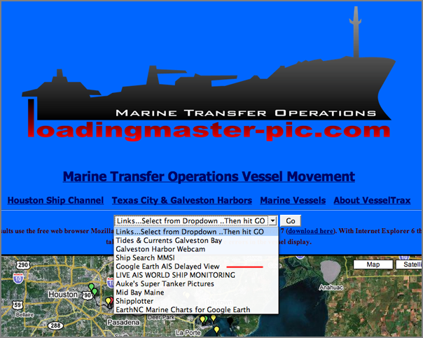
<br /><br />
Here is the Google Maps interface that shows a ships AIS message 5
name and cargo information.
<br /><br />
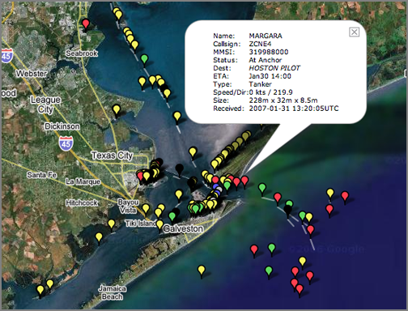
<br /><br />
The Google Earth view with little ship icons.
<br /><br />
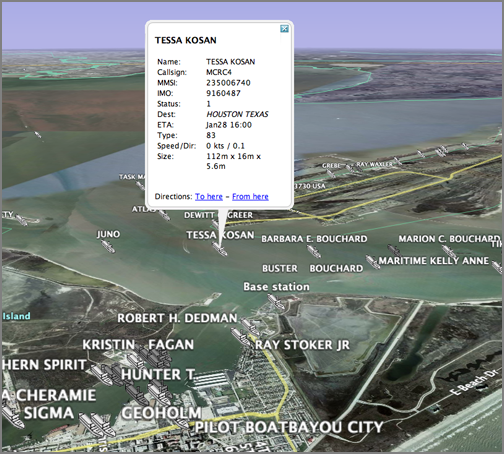
</div>
</div>

<div class="posted">
<br />Posted by <span class="item-creator">Kurt</span>
| <a class="link" href="2007-01.html#e2007-01-31T08_33_01.txt">Permalink</a>

<!-- <br /><a href="archives/2007-02-02T08_44_44.html#comments">Comments</a> -->
</div>
</div>
<div class="item">
<a id="e2007-01-31T07_52_28.txt" name="e2007-01-31T07_52_28.txt"></a>
<h2 class="date">01.31.2007 07:52</h2>
<div class="blogbody">
<h3 class="title">sqlobject fink package</h3>
<div class="item-description">
I am still trying to decide on what database packages if any a fink
sqlobject package should depend, but I have a draft sqlobject-py.info
file that you can put in /sw/fink/10.4/local/main/finkinfo/databases
<br /><br />
Note, that if you are readying this long after I wrote this post, the
sqlobject will hopefully be in the fink tree and not on my drafts
page.
<br /><br />
<a href="http://vislab-ccom.unh.edu/~schwehr/software/fink/">My draft
fink packages</a> - download sqlobject-py.info dated 31-Jan-2007 or
newer.
<br /><br />
BTW, if someone really knows sqlalchemy and/or sqlobject, I could
really use a tutorial on how to use these database wrappers
effectively.
</div>
</div>

<div class="posted">
<br />Posted by <span class="item-creator">Kurt</span>
| <a class="link" href="2007-01.html#e2007-01-31T07_52_28.txt">Permalink</a>

<!-- <br /><a href="archives/2007-01-31T08_33_01.html#comments">Comments</a> -->
</div>
</div>
<div class="item">
<a id="e2007-01-30T18_11_28.txt" name="e2007-01-30T18_11_28.txt"></a>
<h2 class="date">01.30.2007 18:11</h2>
<div class="blogbody">
<h3 class="title">Another sunrise shot</h3>
<div class="item-description">
I've been trying to recapture that missed shot.  No luck on the
lighting this morning, but I did capture this shot of the forest.
<br /><br />

</div>
</div>

<div class="posted">
<br />Posted by <span class="item-creator">Kurt</span>
| <a class="link" href="2007-01.html#e2007-01-30T18_11_28.txt">Permalink</a>

<!-- <br /><a href="archives/2007-01-31T07_52_28.html#comments">Comments</a> -->
</div>
</div>
<div class="item">
<a id="e2007-01-30T14_21_43.txt" name="e2007-01-30T14_21_43.txt"></a>
<h2 class="date">01.30.2007 14:21</h2>
<div class="blogbody">
<h3 class="title">Navy sub commander relieved of duty</h3>
<div class="item-description">
I don't have any details since this is a fairplay headline:
<pre>
Navy sub commander relieved of duty
.
THE commander of a US nuclear submarine has been relieved of duty
following his boat's collision with a tanker in the Persian Gulf.
</pre>
</div>
</div>

<div class="posted">
<br />Posted by <span class="item-creator">Kurt</span>
| <a class="link" href="2007-01.html#e2007-01-30T14_21_43.txt">Permalink</a>

<!-- <br /><a href="archives/2007-01-30T18_11_28.html#comments">Comments</a> -->
</div>
</div>
<div class="item">
<a id="e2007-01-30T13_38_48.txt" name="e2007-01-30T13_38_48.txt"></a>
<h2 class="date">01.30.2007 13:38</h2>
<div class="blogbody">
<h3 class="title">Google Earth and Sketchup tutorial videos</h3>
<div class="item-description">
<a
href="http://www.gearthblog.com/blog/archives/2007/01/video_tutorials_for.html">Video
Tutorials for SketchUp to Google Earth</a> [googleearthblog.com]
</div>
</div>

<div class="posted">
<br />Posted by <span class="item-creator">Kurt</span>
| <a class="link" href="2007-01.html#e2007-01-30T13_38_48.txt">Permalink</a>

<!-- <br /><a href="archives/2007-01-30T14_21_43.html#comments">Comments</a> -->
</div>
</div>
<div class="item">
<a id="e2007-01-30T07_11_45.txt" name="e2007-01-30T07_11_45.txt"></a>
<h2 class="date">01.30.2007 07:11</h2>
<div class="blogbody">
<h3 class="title">Converting ESRI Arc/Info shape files to Google Earth KML</h3>
<div class="item-description">
<a
href="http://www.gearthblog.com/blog/archives/2007/01/shape2earth_gis_data.html">Shape2Earth
- GIS Data to Google Earth</a> talks about converting shape files to
Google Earth KML using some commercial windows only tools.  Here is
another option.  I've shown this before with s57 ENC chart data, but
here it is with a Arc shape file. (Using gdal version 1.4.0 or newer)
<pre>
 ogrinfo sbnms.shp
INFO: Open of `sbnms.shp'
      using driver `ESRI Shapefile' successful.
1: sbnms (Polygon)
</pre>
So there should be a polygon in that file.
<pre>
ogr2ogr -f KML sbnms.kml sbnms.shp
</pre>
Which creates this kml
<pre>
<font color="#2040a0"><strong><font color="4444FF"><strong>&lt;</strong></font><font color="#2040a0">?xml</font> <font color="#2040a0">version=</font><font color="#008000">&quot;1.0&quot;</font> <font color="#2040a0">encoding=</font><font color="#008000">&quot;utf-8&quot;</font> <font color="#2040a0">?</font><font color="4444FF"><strong>&gt;</strong></font></strong></font>
<font color="#2040a0"><strong><font color="4444FF"><strong>&lt;</strong></font><font color="#2040a0">kml</font> <font color="#2040a0">xmlns=</font><font color="#008000">&quot;http://earth.google.com/kml/2.0&quot;</font><font color="4444FF"><strong>&gt;</strong></font></strong></font>
<font color="#2040a0"><strong><font color="4444FF"><strong>&lt;</strong></font><font color="#2040a0">Document</font><font color="4444FF"><strong>&gt;</strong></font></strong></font><font color="#2040a0"><strong><font color="4444FF"><strong>&lt;</strong></font><font color="#2040a0">Folder</font><font color="4444FF"><strong>&gt;</strong></font></strong></font><font color="#2040a0"><strong><font color="4444FF"><strong>&lt;</strong></font><font color="#2040a0">name</font><font color="4444FF"><strong>&gt;</strong></font></strong></font>sbnms<font color="#2040a0"><strong><font color="4444FF"><strong>&lt;</strong></font><font color="#2040a0">/name</font><font color="4444FF"><strong>&gt;</strong></font></strong></font>
  <font color="#2040a0"><strong><font color="4444FF"><strong>&lt;</strong></font><font color="#2040a0">Placemark</font><font color="4444FF"><strong>&gt;</strong></font></strong></font>
    <font color="#2040a0"><strong><font color="4444FF"><strong>&lt;</strong></font><font color="#2040a0">description</font><font color="4444FF"><strong>&gt;</strong></font></strong></font><font color="#2040a0"><strong><font color="4444FF"><strong>&lt;</strong></font><font color="#2040a0">![CDATA[
</font>      <font color="4444FF"><strong>&lt;</strong></font><font color="#2040a0">b</font><font color="4444FF"><strong>&gt;</strong></font></strong></font>OBJECTID:<font color="#2040a0"><strong><font color="4444FF"><strong>&lt;</strong></font><font color="#2040a0">/b</font><font color="4444FF"><strong>&gt;</strong></font></strong></font> <font color="#2040a0"><strong><font color="4444FF"><strong>&lt;</strong></font><font color="#2040a0">i</font><font color="4444FF"><strong>&gt;</strong></font></strong></font>1<font color="#2040a0"><strong><font color="4444FF"><strong>&lt;</strong></font><font color="#2040a0">/i</font><font color="4444FF"><strong>&gt;</strong></font></strong></font><font color="#2040a0"><strong><font color="4444FF"><strong>&lt;</strong></font><font color="#2040a0">br</font> <font color="#2040a0">/</font><font color="4444FF"><strong>&gt;</strong></font></strong></font>
      <font color="#2040a0"><strong><font color="4444FF"><strong>&lt;</strong></font><font color="#2040a0">b</font><font color="4444FF"><strong>&gt;</strong></font></strong></font>AREA:<font color="#2040a0"><strong><font color="4444FF"><strong>&lt;</strong></font><font color="#2040a0">/b</font><font color="4444FF"><strong>&gt;</strong></font></strong></font> <font color="#2040a0"><strong><font color="4444FF"><strong>&lt;</strong></font><font color="#2040a0">i</font><font color="4444FF"><strong>&gt;</strong></font></strong></font>0.23956600000<font color="#2040a0"><strong><font color="4444FF"><strong>&lt;</strong></font><font color="#2040a0">/i</font><font color="4444FF"><strong>&gt;</strong></font></strong></font><font color="#2040a0"><strong><font color="4444FF"><strong>&lt;</strong></font><font color="#2040a0">br</font> <font color="#2040a0">/</font><font color="4444FF"><strong>&gt;</strong></font></strong></font>
      <font color="#2040a0"><strong><font color="4444FF"><strong>&lt;</strong></font><font color="#2040a0">b</font><font color="4444FF"><strong>&gt;</strong></font></strong></font>PERIMETER:<font color="#2040a0"><strong><font color="4444FF"><strong>&lt;</strong></font><font color="#2040a0">/b</font><font color="4444FF"><strong>&gt;</strong></font></strong></font> <font color="#2040a0"><strong><font color="4444FF"><strong>&lt;</strong></font><font color="#2040a0">i</font><font color="4444FF"><strong>&gt;</strong></font></strong></font>2.04266000000<font color="#2040a0"><strong><font color="4444FF"><strong>&lt;</strong></font><font color="#2040a0">/i</font><font color="4444FF"><strong>&gt;</strong></font></strong></font><font color="#2040a0"><strong><font color="4444FF"><strong>&lt;</strong></font><font color="#2040a0">br</font> <font color="#2040a0">/</font><font color="4444FF"><strong>&gt;</strong></font></strong></font>
      <font color="#2040a0"><strong><font color="4444FF"><strong>&lt;</strong></font><font color="#2040a0">b</font><font color="4444FF"><strong>&gt;</strong></font></strong></font>Shape_Leng:<font color="#2040a0"><strong><font color="4444FF"><strong>&lt;</strong></font><font color="#2040a0">/b</font><font color="4444FF"><strong>&gt;</strong></font></strong></font> <font color="#2040a0"><strong><font color="4444FF"><strong>&lt;</strong></font><font color="#2040a0">i</font><font color="4444FF"><strong>&gt;</strong></font></strong></font>2.04266456234<font color="#2040a0"><strong><font color="4444FF"><strong>&lt;</strong></font><font color="#2040a0">/i</font><font color="4444FF"><strong>&gt;</strong></font></strong></font><font color="#2040a0"><strong><font color="4444FF"><strong>&lt;</strong></font><font color="#2040a0">br</font> <font color="#2040a0">/</font><font color="4444FF"><strong>&gt;</strong></font></strong></font>
      <font color="#2040a0"><strong><font color="4444FF"><strong>&lt;</strong></font><font color="#2040a0">b</font><font color="4444FF"><strong>&gt;</strong></font></strong></font>Shape_Area:<font color="#2040a0"><strong><font color="4444FF"><strong>&lt;</strong></font><font color="#2040a0">/b</font><font color="4444FF"><strong>&gt;</strong></font></strong></font> <font color="#2040a0"><strong><font color="4444FF"><strong>&lt;</strong></font><font color="#2040a0">i</font><font color="4444FF"><strong>&gt;</strong></font></strong></font>0.23956563571<font color="#2040a0"><strong><font color="4444FF"><strong>&lt;</strong></font><font color="#2040a0">/i</font><font color="4444FF"><strong>&gt;</strong></font></strong></font><font color="#2040a0"><strong><font color="4444FF"><strong>&lt;</strong></font><font color="#2040a0">br</font> <font color="#2040a0">/</font><font color="4444FF"><strong>&gt;</strong></font></strong></font>
   ]]&gt;<font color="#2040a0"><strong><font color="4444FF"><strong>&lt;</strong></font><font color="#2040a0">/description</font><font color="4444FF"><strong>&gt;</strong></font></strong></font>      <font color="#2040a0"><strong><font color="4444FF"><strong>&lt;</strong></font><font color="#2040a0">Polygon</font><font color="4444FF"><strong>&gt;</strong></font></strong></font><font color="#2040a0"><strong><font color="4444FF"><strong>&lt;</strong></font><font color="#2040a0">outerBoundaryIs</font><font color="4444FF"><strong>&gt;</strong></font></strong></font><font color="#2040a0"><strong><font color="4444FF"><strong>&lt;</strong></font><font color="#2040a0">LinearRing</font><font color="4444FF"><strong>&gt;</strong></font></strong></font><font color="#2040a0"><strong><font color="4444FF"><strong>&lt;</strong></font><font color="#2040a0">coordinates</font><font color="4444FF"><strong>&gt;</strong></font></strong></font>-70.502624517077535,42.651229858376865 -70.216651917737892,42.766723627364335 -70.035064690795366,42.093299872372249 -70.054344171734087,42.1051712037602 -70.067070010211893,42.108303073944938 -70.086586000518764,42.117519381620241 -70.106071466728224,42.120601658877817 -70.123886112296802,42.126754758125287 -70.140045164348635,42.128528592356282 -70.154968262866575,42.133419041708223 -70.172912604417078,42.13481140155551 -70.196044924942854,42.132099157383799 -70.217071529781094,42.133392331376747 -70.238891607484177,42.129699711869044 -70.2558517459629,42.124347685078639 -70.277999877386733,42.115261073385255 -70.470436094985956,42.12923813443058 -70.597366328254395,42.551074986184581 -70.586975101270227,42.558498376829306 -70.58387756894885,42.563468929236009 -70.572532649020488,42.575222019909717 -70.555580138073651,42.580753321639378 -70.541786193673204,42.587898251490522 -70.528427130349584,42.595039367575716 -70.51586913948303,42.606506341984264 -70.50587462797651,42.621070862684029 -70.501319887816891,42.633117669215117 -70.501304632753104,42.642444604042602 -70.502624517077535,42.651229858376865<font color="#2040a0"><strong><font color="4444FF"><strong>&lt;</strong></font><font color="#2040a0">/coordinates</font><font color="4444FF"><strong>&gt;</strong></font></strong></font><font color="#2040a0"><strong><font color="4444FF"><strong>&lt;</strong></font><font color="#2040a0">/LinearRing</font><font color="4444FF"><strong>&gt;</strong></font></strong></font><font color="#2040a0"><strong><font color="4444FF"><strong>&lt;</strong></font><font color="#2040a0">/outerBoundaryIs</font><font color="4444FF"><strong>&gt;</strong></font></strong></font><font color="#2040a0"><strong><font color="4444FF"><strong>&lt;</strong></font><font color="#2040a0">/Polygon</font><font color="4444FF"><strong>&gt;</strong></font></strong></font>
  <font color="#2040a0"><strong><font color="4444FF"><strong>&lt;</strong></font><font color="#2040a0">Style</font><font color="4444FF"><strong>&gt;</strong></font></strong></font><font color="#2040a0"><strong><font color="4444FF"><strong>&lt;</strong></font><font color="#2040a0">LineStyle</font><font color="4444FF"><strong>&gt;</strong></font></strong></font><font color="#2040a0"><strong><font color="4444FF"><strong>&lt;</strong></font><font color="#2040a0">color</font><font color="4444FF"><strong>&gt;</strong></font></strong></font>ff0000ff<font color="#2040a0"><strong><font color="4444FF"><strong>&lt;</strong></font><font color="#2040a0">/color</font><font color="4444FF"><strong>&gt;</strong></font></strong></font><font color="#2040a0"><strong><font color="4444FF"><strong>&lt;</strong></font><font color="#2040a0">/LineStyle</font><font color="4444FF"><strong>&gt;</strong></font></strong></font>  <font color="#2040a0"><strong><font color="4444FF"><strong>&lt;</strong></font><font color="#2040a0">PolyStyle</font><font color="4444FF"><strong>&gt;</strong></font></strong></font><font color="#2040a0"><strong><font color="4444FF"><strong>&lt;</strong></font><font color="#2040a0">fill</font><font color="4444FF"><strong>&gt;</strong></font></strong></font>0<font color="#2040a0"><strong><font color="4444FF"><strong>&lt;</strong></font><font color="#2040a0">/fill</font><font color="4444FF"><strong>&gt;</strong></font></strong></font><font color="#2040a0"><strong><font color="4444FF"><strong>&lt;</strong></font><font color="#2040a0">/PolyStyle</font><font color="4444FF"><strong>&gt;</strong></font></strong></font><font color="#2040a0"><strong><font color="4444FF"><strong>&lt;</strong></font><font color="#2040a0">/Style</font><font color="4444FF"><strong>&gt;</strong></font></strong></font>
  <font color="#2040a0"><strong><font color="4444FF"><strong>&lt;</strong></font><font color="#2040a0">/Placemark</font><font color="4444FF"><strong>&gt;</strong></font></strong></font>
<font color="#2040a0"><strong><font color="4444FF"><strong>&lt;</strong></font><font color="#2040a0">/Folder</font><font color="4444FF"><strong>&gt;</strong></font></strong></font><font color="#2040a0"><strong><font color="4444FF"><strong>&lt;</strong></font><font color="#2040a0">/Document</font><font color="4444FF"><strong>&gt;</strong></font></strong></font><font color="#2040a0"><strong><font color="4444FF"><strong>&lt;</strong></font><font color="#2040a0">/kml</font><font color="4444FF"><strong>&gt;</strong></font></strong></font>
</pre>
The results in Google Earth look like this:
<br /><br />
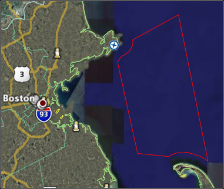
</div>
</div>

<div class="posted">
<br />Posted by <span class="item-creator">Kurt</span>
| <a class="link" href="2007-01.html#e2007-01-30T07_11_45.txt">Permalink</a>

<!-- <br /><a href="archives/2007-01-30T13_38_48.html#comments">Comments</a> -->
</div>
</div>
<div class="item">
<a id="e2007-01-30T06_50_07.txt" name="e2007-01-30T06_50_07.txt"></a>
<h2 class="date">01.30.2007 06:50</h2>
<div class="blogbody">
<h3 class="title">Princess Cruise Lines fined for striking a whale</h3>
<div class="item-description">
<a href="http://www.walb.com/Global/story.asp?S=6007812&nav=menu37_3">Princess Cruise Lines pays fine, restitution in whale's death</a>
<br /><br />
<pre>
by Jill Burke:
Princess Cruise Lines is facing a significant fine after one of its
ships struck and killed a humpback whale in Southeast Alaska.
<br /><br />
The collision took place in July 2001 near Glacier Bay National Park
and Preserve.
<br /><br />
Princess Cruise Lines is expected to enter a guilty plea Monday in
U.S. district court in Anchorage. The company is also expected to pay
a $755,000 fine because the ship Dawn Princess failed to operate at a
slow speed around the whale.
</pre>
</div>
</div>

<div class="posted">
<br />Posted by <span class="item-creator">Kurt</span>
| <a class="link" href="2007-01.html#e2007-01-30T06_50_07.txt">Permalink</a>

<!-- <br /><a href="archives/2007-01-30T07_11_45.html#comments">Comments</a> -->
</div>
</div>
<div class="item">
<a id="e2007-01-29T16_27_38.txt" name="e2007-01-29T16_27_38.txt"></a>
<h2 class="date">01.29.2007 16:27</h2>
<div class="blogbody">
<h3 class="title">NOAA Sister Sanctuary</h3>
<div class="item-description">
<a href="http://www.noaanews.noaa.gov/stories2007/s2784.htm">SISTER
SANCTUARIES TO PROTECT ENDANGERED WHALES AT BOTH ENDS OF ANNUAL
MIGRATION</a> [noaa.gov]
<br /><br />
United States and Dominican Republic Partner in Historic Conservation Effort
<pre>
NOAA image of humpback whale breaching in the NOAA Stellwagen Bank
National Marine Sanctuary, which is one of the acrobatic behaviors
that whale watchers enjoy seeing.Jan. 29, 2007 - NOAA established a
"sister sanctuary" arrangement between the NOAA Stellwagen Bank
National Marine Sanctuary off the coast of Massachusetts and the
Marine Mammal Sanctuary of the Dominican Republic, two marine
protected areas 3,000 miles apart that provide conservation programs
for the same population of humpback whales.</pre>
</div>
</div>

<div class="posted">
<br />Posted by <span class="item-creator">Kurt</span>
| <a class="link" href="2007-01.html#e2007-01-29T16_27_38.txt">Permalink</a>

<!-- <br /><a href="archives/2007-01-30T06_50_07.html#comments">Comments</a> -->
</div>
</div>
<div class="item">
<a id="e2007-01-29T16_25_17.txt" name="e2007-01-29T16_25_17.txt"></a>
<h2 class="date">01.29.2007 16:25</h2>
<div class="blogbody">
<h3 class="title">DefenseTech on "Too Much Information"</h3>
<div class="item-description">
Several of us were discussing information overload for mariners in the
last day.  It is always tough to know how and how much information to
display to users.
<br /><br />
<a href="http://www.defensetech.org/archives/003221.html">T.M.I., Robo-Dude</a> [defensetech.org]
<pre>But that's too many robots, Hudas says. Four drones is the realistic
max. And a third crewman at an additional console is ideal. And that's
assuming a minimal level of human intervention in the drones
activities. Basically, you tell a drone what to do, confirm the
command, then let it go. Now, if the drone wants to kill something,
it's going to need a soldier's permission. But for surveillance and
reconnaissance, it can make its own decisions. "With those
applications," Hudas says, "we don't even want a soldier."
</pre>
</div>
</div>

<div class="posted">
<br />Posted by <span class="item-creator">Kurt</span>
| <a class="link" href="2007-01.html#e2007-01-29T16_25_17.txt">Permalink</a>

<!-- <br /><a href="archives/2007-01-29T16_27_38.html#comments">Comments</a> -->
</div>
</div>
<div class="item">
<a id="e2007-01-29T07_12_21.txt" name="e2007-01-29T07_12_21.txt"></a>
<h2 class="date">01.29.2007 07:12</h2>
<div class="blogbody">
<h3 class="title">oceanschedules.com</h3>
<div class="item-description">
Find out who is where.  Hard to dig up ships unless you know what
ports they are using, but interesting.  I don't see a how it works on
their web page.  I would be interested in knowning which databases
they are scraping.
<br /><br />

</div>
</div>

<div class="posted">
<br />Posted by <span class="item-creator">Kurt</span>
| <a class="link" href="2007-01.html#e2007-01-29T07_12_21.txt">Permalink</a>

<!-- <br /><a href="archives/2007-01-29T16_25_17.html#comments">Comments</a> -->
</div>
</div>
<div class="item">
<a id="e2007-01-28T15_34_47.txt" name="e2007-01-28T15_34_47.txt"></a>
<h2 class="date">01.28.2007 15:34</h2>
<div class="blogbody">
<h3 class="title">NSF Visualization Contest</h3>
<div class="item-description">
Just a reminder that the NSF visualization competion is open for
submissions until May 31st.
<br /><br />
<a href="http://nsf.gov/news/special_reports/scivis/index.jsp?id=impdates">NSF 2007 Science and Engineering Visualization Challenge</a>
</div>
</div>

<div class="posted">
<br />Posted by <span class="item-creator">Kurt</span>
| <a class="link" href="2007-01.html#e2007-01-28T15_34_47.txt">Permalink</a>

<!-- <br /><a href="archives/2007-01-29T07_12_21.html#comments">Comments</a> -->
</div>
</div>
<div class="item">
<a id="e2007-01-28T08_45_56.txt" name="e2007-01-28T08_45_56.txt"></a>
<h2 class="date">01.28.2007 08:45</h2>
<div class="blogbody">
<h3 class="title">A light snow in the woods</h3>
<div class="item-description">
There was a light snow last night.  Here is what Gregg Hall looks like
from the woods.
<br /><br />

</div>
</div>

<div class="posted">
<br />Posted by <span class="item-creator">Kurt</span>
| <a class="link" href="2007-01.html#e2007-01-28T08_45_56.txt">Permalink</a>

<!-- <br /><a href="archives/2007-01-28T15_34_47.html#comments">Comments</a> -->
</div>
</div>
<div class="item">
<a id="e2007-01-27T15_03_40.txt" name="e2007-01-27T15_03_40.txt"></a>
<h2 class="date">01.27.2007 15:03</h2>
<div class="blogbody">
<h3 class="title">Working towards Python Cartigraphic Library in fink</h3>
<div class="item-description">
I am working my way towards having PCL be in fink for mac users.  I
just checked in quadtree-py and owslib-py which are both useful in
their own rights.
<br /><br />
<a href="http://cheeseshop.python.org/pypi/Quadtree/">Quadtree</a>
<br /><br />
<a href="http://cheeseshop.python.org/pypi/OWSLib">OWSLib</a> provides
OWS/WMS/WMF capabilities (OCG Web Services)
</div>
</div>

<div class="posted">
<br />Posted by <span class="item-creator">Kurt</span>
| <a class="link" href="2007-01.html#e2007-01-27T15_03_40.txt">Permalink</a>

<!-- <br /><a href="archives/2007-01-28T08_45_56.html#comments">Comments</a> -->
</div>
</div>
<div class="item">
<a id="e2007-01-27T11_23_44.txt" name="e2007-01-27T11_23_44.txt"></a>
<h2 class="date">01.27.2007 11:23</h2>
<div class="blogbody">
<h3 class="title">Converting a movie to frames</h3>
<div class="item-description">
I need to export all the frames in about 10 HD sized AVI files so that
I can overlay figures and text.  I tried Quicktime Pro's export
functionality.  File - Export - Movie to Image Sequence - Options -
PNG.  That took about an hour and a half to export a 3:20 minute avi.
Trying mplayer with altivec on fink looks to take under 30 minutes.
Much better.
<pre>mplayer -nosound -vo png z_gray.avi</pre>
</div>
</div>

<div class="posted">
<br />Posted by <span class="item-creator">Kurt</span>
| <a class="link" href="2007-01.html#e2007-01-27T11_23_44.txt">Permalink</a>

<!-- <br /><a href="archives/2007-01-27T15_03_40.html#comments">Comments</a> -->
</div>
</div>
<div class="item">
<a id="e2007-01-27T08_15_22.txt" name="e2007-01-27T08_15_22.txt"></a>
<h2 class="date">01.27.2007 08:15</h2>
<div class="blogbody">
<h3 class="title">Active Captain</h3>
<div class="item-description">
<a href="http://www.activecaptain.com/">activecaptain.com</a>
<br /><br />
Requires login to use.  It is a Yahoo Maps based application.
Unfortunately, if you submit information to this site, you can only
use that info from within the site.
<br /><br />
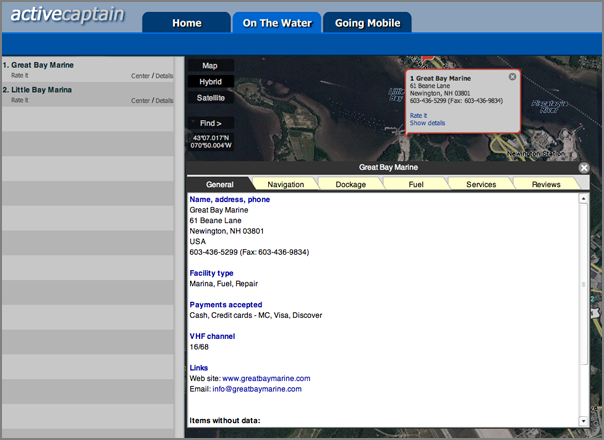
</div>
</div>

<div class="posted">
<br />Posted by <span class="item-creator">Kurt</span>
| <a class="link" href="2007-01.html#e2007-01-27T08_15_22.txt">Permalink</a>

<!-- <br /><a href="archives/2007-01-27T11_23_44.html#comments">Comments</a> -->
</div>
</div>
<div class="item">
<a id="e2007-01-27T08_03_27.txt" name="e2007-01-27T08_03_27.txt"></a>
<h2 class="date">01.27.2007 08:03</h2>
<div class="blogbody">
<h3 class="title">OAI-PMH</h3>
<div class="item-description">
Yesterday, we had a talk by Suzanne Carbotte of LDEO about access to
marine datasets.  
<br /><br />
<pre>
<b>Serving Multidisciplinary Data for Marine Geoscience Research:
     Approaches and Lessons Learned</b>
Abstract: Digital data collections serve an increasingly important
role in research and education: they aid data discovery, democratize
access to research resources, enable verification of research results,
and provide new research opportunities. The Marine Geoscience Data
System, hosted at LDEO, is a resource collection that serves
multi-disciplinary marine geoscience data for the NSF Ridge2000 and
MARGINS programs and for Southern Ocean Research conducted on the RV
Palmer.
<br /><br />
An overview of system architecture including data and access services
will be presented. Our experience with this system highlights issues
associated with managing such collections, including the need to
embrace rapidly evolving technologies, the need for new approaches to
metadata collection and data transfer to archives, and the importance
of close interaction with user
</pre>
I am excited that she put so much emphasis on WMS/WMF.  She also
talked about OAI-PMH.  Not stuff I had heard of before.  That stands
for "Open Archives Initiative - Protocol for Metadata Harvesting."  <a
href="http://www.openarchives.org/">openarchives.org/</a>
<pre>
<b>Standards for Repository Interoperability</b>
The Open Archives Initiative develops and promotes interoperability
standards that aim to facilitate the efficient dissemination of
content. OAI has its roots in the open access and institutional
repository movements. Continued support of this work remains a
cornerstone of the Open Archives program. Over time, however, the work
of OAI has expanded to promote broad access to digital resources for
eScholarship, eLearning, and eScience.
</pre>
</div>
</div>

<div class="posted">
<br />Posted by <span class="item-creator">Kurt</span>
| <a class="link" href="2007-01.html#e2007-01-27T08_03_27.txt">Permalink</a>

<!-- <br /><a href="archives/2007-01-27T08_15_22.html#comments">Comments</a> -->
</div>
</div>
<div class="item">
<a id="e2007-01-27T07_48_53.txt" name="e2007-01-27T07_48_53.txt"></a>
<h2 class="date">01.27.2007 07:48</h2>
<div class="blogbody">
<h3 class="title">It is all about timing</h3>
<div class="item-description">
This morning's sunrise had people running for their cameras - me
included.  I just missed the steam coming out of the stack looking
like it was on fire.  Just missed it by less than a minute.  Here is
what I did capture, which is not bad, but timing is everything.
<br /><br />

</div>
</div>

<div class="posted">
<br />Posted by <span class="item-creator">Kurt</span>
| <a class="link" href="2007-01.html#e2007-01-27T07_48_53.txt">Permalink</a>

<!-- <br /><a href="archives/2007-01-27T08_03_27.html#comments">Comments</a> -->
</div>
</div>
<div class="item">
<a id="e2007-01-26T10_41_23.txt" name="e2007-01-26T10_41_23.txt"></a>
<h2 class="date">01.26.2007 10:41</h2>
<div class="blogbody">
<h3 class="title">Python Cartographic Library - point within a polygon</h3>
<div class="item-description">
This is one of those basic problems.  How do you know if a point is
within a polygon.  Yes, I have coded this up myself, but I would
rather use a solid package to do this and get lots of other operators
done right.  I just got PCL-Core working and have a little example
that shows testing points against a polygon.
<br /><br />
Note that WKT is the "Well Known Text" form of geographic data.  I
seem to be unable to get it right when typing.  I think my history
with World ToolKit (WTK) is messing with my head.
<br /><br />
Here is the example:<pre>
In [1]: from cartography.geometry import Geometry, Point, LinearRing, Polygon
In [2]: wkt = 'POLYGON ((-1.0 50.5, -0.5 51.2, 0.3 50.9, -1 50.5))'
In [3]: a = Geometry.fromWKT(wkt)
In [4]: wtk_POINT_IN = 'POINT (-0.5 51.15)'
In [5]: pIn = Geometry.fromWKT(wtk_POINT_IN)
In [6]: wtk_POINT_IN = 'POINT (-0.5 51.5)'
.
In [7]: pIn.within(a)
Out[7]: 1
.
In [8]: wtk_POINT_OUT = 'POINT (100 51.5)'
In [9]: pOut = Geometry.fromWKT(wtk_POINT_OUT)
.
In [10]: pOut.within(a)
Out[10]: 0
</pre>
That's it.  I am still working on the fink packaging (which is giving
me a little bit of trouble), but should have packages up soon.
<a
href="http://vislab-ccom.unh.edu/~schwehr/software/fink/">http://vislab-ccom.unh.edu/~schwehr/software/fink/</a>.
You will need owslib-py.info, quadtree-py.info and a couple pcl-*.info
files.
</div>
</div>

<div class="posted">
<br />Posted by <span class="item-creator">Kurt</span>
| <a class="link" href="2007-01.html#e2007-01-26T10_41_23.txt">Permalink</a>

<!-- <br /><a href="archives/2007-01-27T07_48_53.html#comments">Comments</a> -->
</div>
</div>
<div class="item">
<a id="e2007-01-26T10_27_08.txt" name="e2007-01-26T10_27_08.txt"></a>
<h2 class="date">01.26.2007 10:27</h2>
<div class="blogbody">
<h3 class="title">Ice crystals on a window</h3>
<div class="item-description">
The temperature today is a nice warm -2 F.  I captured this image on a
window today:  Ice crystals growing on a window pane.
<br /><br />

</div>
</div>

<div class="posted">
<br />Posted by <span class="item-creator">Kurt</span>
| <a class="link" href="2007-01.html#e2007-01-26T10_27_08.txt">Permalink</a>

<!-- <br /><a href="archives/2007-01-26T10_41_23.html#comments">Comments</a> -->
</div>
</div>
<div class="item">
<a id="e2007-01-25T20_31_04.txt" name="e2007-01-25T20_31_04.txt"></a>
<h2 class="date">01.25.2007 20:31</h2>
<div class="blogbody">
<h3 class="title">Periodic Table of Visualization Methods for Management</h3>
<div class="item-description">
<a href="http://www.visual-literacy.org/pages/documents.htm">periodic table of visualization techniques</a>
<br /><br />
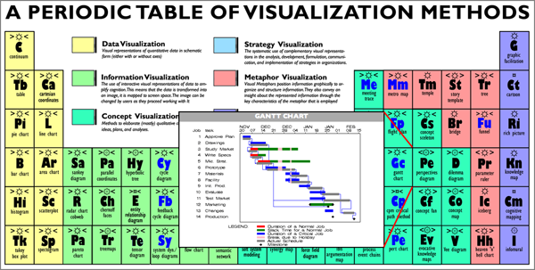
</div>
</div>

<div class="posted">
<br />Posted by <span class="item-creator">Kurt</span>
| <a class="link" href="2007-01.html#e2007-01-25T20_31_04.txt">Permalink</a>

<!-- <br /><a href="archives/2007-01-26T10_27_08.html#comments">Comments</a> -->
</div>
</div>
<div class="item">
<a id="e2007-01-24T07_57_25.txt" name="e2007-01-24T07_57_25.txt"></a>
<h2 class="date">01.24.2007 07:57</h2>
<div class="blogbody">
<h3 class="title">Long Beach LNG terminal cancelled</h3>
<div class="item-description">
<a href="http://www.latimes.com/news/printedition/california/la-me-lng23jan23,1,5073010.story?coll=la-headlines-pe-california">Long Beach energy project halted</a> [latimes.com]
<pre>
...
In a unanimous vote, the Long Beach Board of Harbor Commissioners
decided to end an environmental review of the project that was
launched more than two years ago but had slipped far behind
schedule. The action effectively terminates the effort by the port and
a partnership of Mitsubishi Corp. and ConocoPhillips to build a
$700-million liquefied natural gas plant inside the busiest cargo port
in the nation.
<br /><br />
"The project is dead," said Doris Topsy-Elvord, a commissioner and
former Long Beach councilwoman. "It's been a long haul, we've worked
hard at it, but it is at a standstill. I do not think there's a
possibility it will come back," she said.
...
Since Long Beach officials began reviewing the project, other energy
companies have proposed liquid natural gas terminals offshore in
Southern California where the risk to the public is minimal.
<br /><br />
Australia-based BHP Billiton proposes a floating terminal off the
coast of Ventura County; Crystal Energy Co. wants to convert an old
oil platform to an LNG terminal offshore from Oxnard; and Woodside
Energy Ltd. wants to build one near Malibu; Sempra Energy Co. has
already begun building a massive LNG terminal near Ensenada in Baja
California, Mexico.
</pre>
</div>
</div>

<div class="posted">
<br />Posted by <span class="item-creator">Kurt</span>
| <a class="link" href="2007-01.html#e2007-01-24T07_57_25.txt">Permalink</a>

<!-- <br /><a href="archives/2007-01-25T20_31_04.html#comments">Comments</a> -->
</div>
</div>
<div class="item">
<a id="e2007-01-24T07_53_21.txt" name="e2007-01-24T07_53_21.txt"></a>
<h2 class="date">01.24.2007 07:53</h2>
<div class="blogbody">
<h3 class="title">Portsmouth Internaltional Boat Show from May 31 - June 1</h3>
<div class="item-description">
<a href="http://www.seacoastonline.com/news/01232007/business-b-boat.show.html">Showboat promoter</a> [seacoastonline.com]
<pre>While several of the details still have to be finalized, Parker has
guaranteed to put on the first Portsmouth International Boat Show from
May 31 to June 1. He expects the 400 exhibitors he has contacted to
draw upward of 40,000 people to the city.</pre>
</div>
</div>

<div class="posted">
<br />Posted by <span class="item-creator">Kurt</span>
| <a class="link" href="2007-01.html#e2007-01-24T07_53_21.txt">Permalink</a>

<!-- <br /><a href="archives/2007-01-24T07_57_25.html#comments">Comments</a> -->
</div>
</div>
<div class="item">
<a id="e2007-01-22T17_14_49.txt" name="e2007-01-22T17_14_49.txt"></a>
<h2 class="date">01.22.2007 17:14</h2>
<div class="blogbody">
<h3 class="title">SQL support for AIS databases in noaadata/ais</h3>
<div class="item-description">
I just got initial database support working for the noaadata/ais
submodule (version 0.13).  This has only passed one test case and I
am sure there are a few gotchas waiting.  Here is an example of its 
use on the command line.  I received this AIS message today:
<pre>!AIVDM,1,1,,B,14QsCc0001JA7Cv>gfkhJa?@0D0w,0*71</pre>
Now I can prepare for the database:
<pre>./ais_msg_1.py --sql-create</pre>
This emits the database table creation command:
<pre>CREATE TABLE position ( \
	    MessageID INTEGER, RepeatIndicator INTEGER, \
	    UserID INTEGER, NavigationStatus INTEGER, \
	    ROT INTEGER, SOG DECIMAL(4,1), PositionAccuracy INTEGER, \
	    Position_longitude DECIMAL(8,5), \
	    Position_latitude DECIMAL(8,5), COG DECIMAL(4,1), \
	    TrueHeading INTEGER, TimeStamp INTEGER, \
	    RegionalReserved INTEGER, Spare INTEGER, RAIM BOOL, \
	    syncstate INTEGER, slotoffset INTEGER );
</pre>
That is pretty basic and does not include a primary key, but that is
enough to test a database.  Now we need the insert string, which can
be had by this command:
<pre>./ais_msg_1.py -d -T sql -t nmea \
       '!AIVDM,1,1,,B,14QsCc0001JA7Cv>gfkhJa?@0D0w,0*71'</pre>
This results in an insert string like this:
<pre>INSERT INTO position (RegionalReserved,NavigationStatus,\
  COG,SOG,slotoffset,Position_longitude,RepeatIndicator,\
  UserID,RAIM,syncstate,TimeStamp,Spare,PositionAccuracy,\
  MessageID,TrueHeading,ROT,Position_latitude) 
  VALUES \
  (0,0,10.6,0.1,10247,-80.147415,0,304010156,0,0,40,0,0,1,\
  295,0,25.77015833333333333333333333);
</pre>
Now paste those two commands into an sqlite database:
<pre>
sqlite3 ais.db3
[paste CREATE and then INSERT here]
</pre>
Now you have a database.
<pre>sqlite&gt; SELECT UserID FROM position;
304010156</pre>
</div>
</div>

<div class="posted">
<br />Posted by <span class="item-creator">Kurt</span>
| <a class="link" href="2007-01.html#e2007-01-22T17_14_49.txt">Permalink</a>

<!-- <br /><a href="archives/2007-01-24T07_53_21.html#comments">Comments</a> -->
</div>
</div>
<div class="item">
<a id="e2007-01-21T20_27_19.txt" name="e2007-01-21T20_27_19.txt"></a>
<h2 class="date">01.21.2007 20:27</h2>
<div class="blogbody">
<h3 class="title">scipy arrays in C</h3>
<div class="item-description">
I have been trying to figure out how to use scipy's faster arrays in C
so that I can just access the data as a casted array from C (Barry's
suggestion.)  The documentation for this stuff is a twisted maze of
headers with very few comments and no autogenerated summary docs or
clear examples.  Perhaps there is a web page or two that I need to
discover, so if you know of a great example, please let me know!  Here
is what I did so far to prove the concept and try to do this correctly
and compliant with the latest APIs.  I could easy be wrong, but it
"works for me" with python 2.5 and...
<pre> i   numarray-py25    1.5.2-1      Multidim'l numerical arrays for Python
 i   scipy-core-py25  1.0.1-1      Replacement for Numeric python
 i   scipy-py25       1:0.5.2-3    Scientific tools for Python
</pre>
First the python code to create arrays and pass them into C.
<pre>
<font color="#444444">#!/usr/bin/env python</font>
<strong>import</strong> <font color="#2040a0">numpy</font>
<font color="#2040a0">a</font> <font color="4444FF">=</font> <font color="#2040a0">numpy</font>.<font color="#2040a0">core</font>.<font color="#2040a0">array</font><font color="4444FF">(</font><font color="4444FF">(</font><font color="#FF0000">1.1</font>,<font color="#FF0000">2.2</font>,<font color="#FF0000">3.3</font>,<font color="#FF0000">4.9</font><font color="4444FF">)</font><font color="4444FF">)</font>
<strong>print</strong> <font color="#008000">'len a in py:'</font>,<font color="#2040a0">a</font>,<font color="#2040a0">type</font><font color="4444FF">(</font><font color="#2040a0">a</font><font color="4444FF">)</font>
<strong>import</strong> <font color="#2040a0">karray</font>
<font color="#2040a0">karray</font>.<font color="#2040a0">try1</font><font color="4444FF">(</font><font color="#2040a0">a</font><font color="4444FF">)</font>
<strong>print</strong> <font color="#2040a0">a</font>
<font color="#444444">######################</font>
<strong>import</strong> <font color="#2040a0">array</font>
<font color="#2040a0">a2</font> <font color="4444FF">=</font> <font color="#2040a0">array</font>.<font color="#2040a0">array</font><font color="4444FF">(</font><font color="#008000">'d'</font>,<font color="4444FF">(</font><font color="#FF0000">4.5</font>,<font color="#FF0000">6.7</font><font color="4444FF">)</font><font color="4444FF">)</font>
<strong>print</strong> <font color="#008000">'len a2 in py:'</font>,<font color="#2040a0">a2</font>,<font color="#2040a0">type</font><font color="4444FF">(</font><font color="#2040a0">a2</font><font color="4444FF">)</font>
<font color="#2040a0">karray</font>.<font color="#2040a0">try1</font><font color="4444FF">(</font><font color="#2040a0">a2</font><font color="4444FF">)</font>
<strong>print</strong> <font color="#2040a0">a2</font>
</pre>
Both of the above ways work to create an array for the C code.  Is one
of these better than the other?
<pre>
<font color="0000ff"><strong>#include <font color="#008000">&lt;assert.h&gt;</font></strong></font>
<font color="0000ff"><strong>#include <font color="#008000">&lt;Python.h&gt;</font></strong></font>
<font color="0000ff"><strong>#include <font color="#008000">&lt;numarray/libnumarray.h&gt;</font></strong></font>
<strong>static</strong> <font color="#2040a0">PyObject</font><font color="4444FF">*</font><font color="#2040a0">try1</font><font color="4444FF">(</font><font color="#2040a0">PyObject</font><font color="4444FF">*</font> <font color="#2040a0">self</font>, <font color="#2040a0">PyObject</font><font color="4444FF">*</font> <font color="#2040a0">args</font><font color="4444FF">)</font> <font color="4444FF"><strong>{</strong></font>
    <font color="#2040a0">PyObject</font> <font color="4444FF">*</font><font color="#2040a0">anArray</font><font color="4444FF">=</font><font color="#FF0000">0</font><font color="4444FF">;</font>
    <strong>if</strong><font color="4444FF">(</font><font color="4444FF">!</font><font color="#2040a0">PyArg_ParseTuple</font><font color="4444FF">(</font><font color="#2040a0">args</font>, <font color="#008000">&quot;O&quot;</font>, <font color="4444FF">&amp;</font><font color="#2040a0">anArray</font><font color="4444FF">)</font><font color="4444FF">)</font> <strong>return</strong> <font color="#FF0000">0</font><font color="4444FF">;</font>
    <font color="#2040a0">printf</font> <font color="4444FF">(</font><font color="#008000">&quot;isBuffer: %s<font color="#77dd77">\n</font>&quot;</font>,<font color="4444FF">(</font><font color="#2040a0">isBuffer</font><font color="4444FF">(</font><font color="#2040a0">anArray</font><font color="4444FF">)</font>?<font color="#008000">&quot;yes&quot;</font><font color="4444FF">:</font><font color="#008000">&quot;no&quot;</font><font color="4444FF">)</font><font color="4444FF">)</font><font color="4444FF">;</font>
    <font color="#2040a0">printf</font> <font color="4444FF">(</font><font color="#008000">&quot;getBufferSize: %d<font color="#77dd77">\n</font>&quot;</font>, <font color="#2040a0">getBufferSize</font><font color="4444FF">(</font><font color="#2040a0">anArray</font><font color="4444FF">)</font><font color="4444FF">)</font><font color="4444FF">;</font>
    <font color="4444FF"><strong>{</strong></font>
	<strong>void</strong> <font color="4444FF">*</font><font color="#2040a0">buffer</font><font color="4444FF">=</font><font color="#FF0000">0</font><font color="4444FF">;</font>
	<strong>double</strong> <font color="4444FF">*</font><font color="#2040a0">bufferDouble</font><font color="4444FF">=</font><font color="#FF0000">0</font><font color="4444FF">;</font>
	<strong>long</strong> <font color="#2040a0">buffersize</font><font color="4444FF">=</font><font color="4444FF">-</font><font color="#FF0000">1</font><font color="4444FF">;</font>
	<font color="#2040a0">size_t</font> <font color="#2040a0">len</font><font color="4444FF">=</font><font color="4444FF">-</font><font color="#FF0000">1</font><font color="4444FF">;</font>
	<strong>if</strong> <font color="4444FF">(</font><font color="4444FF">(</font><font color="#2040a0">buffersize</font> <font color="4444FF">=</font> <font color="#2040a0">NA_getBufferPtrAndSize</font><font color="4444FF">(</font><font color="#2040a0">anArray</font>, <font color="#FF0000">0</font>, <font color="4444FF">&amp;</font><font color="#2040a0">buffer</font><font color="4444FF">)</font><font color="4444FF">)</font> <font color="4444FF">&lt;</font> <font color="#FF0000">0</font><font color="4444FF">)</font> <font color="4444FF"><strong>{</strong></font>
	    <font color="#2040a0">fprintf</font><font color="4444FF">(</font><font color="#2040a0">stderr</font>,<font color="#008000">&quot;NA_getBufferPtrAndSize failed<font color="#77dd77">\n</font>&quot;</font><font color="4444FF">)</font><font color="4444FF">;</font>
	    <strong>return</strong> <font color="#FF0000">0</font><font color="4444FF">;</font>
	<font color="4444FF"><strong>}</strong></font>
	<font color="#2040a0">len</font> <font color="4444FF">=</font> <font color="#2040a0">buffersize</font>/<strong>sizeof</strong><font color="4444FF">(</font><strong>double</strong><font color="4444FF">)</font><font color="4444FF">;</font>
	<font color="#2040a0">printf</font> <font color="4444FF">(</font><font color="#008000">&quot;buffersize: %ld -&gt; %d<font color="#77dd77">\n</font>&quot;</font>,<font color="#2040a0">buffersize</font>,<font color="4444FF">(</font><strong>int</strong><font color="4444FF">)</font><font color="#2040a0">len</font><font color="4444FF">)</font><font color="4444FF">;</font>
	<font color="#2040a0">assert</font><font color="4444FF">(</font><font color="#2040a0">buffer</font><font color="4444FF">)</font><font color="4444FF">;</font>
	<font color="#2040a0">bufferDouble</font> <font color="4444FF">=</font> <font color="4444FF">(</font><strong>double</strong> <font color="4444FF">*</font><font color="4444FF">)</font><font color="#2040a0">buffer</font><font color="4444FF">;</font>
	<font color="#2040a0">printf</font> <font color="4444FF">(</font><font color="#008000">&quot;%lf<font color="#77dd77">\n</font>&quot;</font>,<font color="#2040a0">bufferDouble</font><font color="4444FF">[</font><font color="#FF0000">0</font><font color="4444FF">]</font><font color="4444FF">)</font><font color="4444FF">;</font>
	<font color="#2040a0">bufferDouble</font><font color="4444FF">[</font><font color="#FF0000">0</font><font color="4444FF">]</font><font color="4444FF">=</font><font color="4444FF">-</font><font color="#FF0000">99.3</font><font color="4444FF">;</font>  // <font color="#2040a0">Prove</font> <font color="#2040a0">that</font> <font color="#2040a0">I</font> <font color="#2040a0">can</font> <font color="#2040a0">change</font> <font color="#2040a0">a</font> <font color="#2040a0">value</font>
    <font color="4444FF"><strong>}</strong></font>
    <strong>return</strong> <font color="#2040a0">Py_BuildValue</font><font color="4444FF">(</font><font color="#008000">&quot;i&quot;</font>,<font color="#FF0000">1</font><font color="4444FF">)</font><font color="4444FF">;</font> // <font color="#2040a0">Dummy</font> <strong>return</strong> <font color="#2040a0">of</font> <font color="#2040a0">an</font> <strong>int</strong>
<font color="4444FF"><strong>}</strong></font>
<strong>static</strong> <font color="#2040a0">PyMethodDef</font> <font color="#2040a0">karrayMethods</font><font color="4444FF">[</font><font color="4444FF">]</font> <font color="4444FF">=</font> <font color="4444FF"><strong>{</strong></font>  
    <font color="4444FF"><strong>{</strong></font><font color="#008000">&quot;try1&quot;</font>, <font color="#2040a0">try1</font>, <font color="#2040a0">METH_VARARGS</font>, <font color="#008000">&quot;FIX: put doc here&quot;</font><font color="4444FF"><strong>}</strong></font>,
    <font color="4444FF"><strong>{</strong></font><font color="#FF0000">0</font><font color="4444FF"><strong>}</strong></font>
<font color="4444FF"><strong>}</strong></font><font color="4444FF">;</font>
<strong>void</strong>
<font color="#2040a0">initkarray</font><font color="4444FF">(</font><strong>void</strong><font color="4444FF">)</font>   
<font color="4444FF"><strong>{</strong></font>
    <font color="#2040a0">Py_InitModule</font><font color="4444FF">(</font><font color="#008000">&quot;karray&quot;</font>, <font color="#2040a0">karrayMethods</font><font color="4444FF">)</font><font color="4444FF">;</font> 
    <font color="#2040a0">import_libnumarray</font><font color="4444FF">(</font><font color="4444FF">)</font><font color="4444FF">;</font>
<font color="4444FF"><strong>}</strong></font>
</pre>
The above try1 function takes an array of type array.array or
numpy.ndarray and then starts working with the object without much
error checking.  Inside the inner {}, you can see that I get the
buffer and its length.  Then I assume that a 1D double array is passed
into the function.  I set the first value in the array to show that
changes can be passed back from C to Python in the array.  If you use
the array.array style, make sure to use 'd' for doubles otherwise you 
will see strange results.  'f' will not work right.
<pre>
len a in py: [ 1.1  2.2  3.3  4.9] <type 'numpy.ndarray'>
isBuffer: yes
getBufferSize: 32
buffersize: 32 -> 4
1.100000
[ 99.3   2.2   3.3   4.9]
========
len a2 in py: array('d', [4.5, 6.7000000000000002]) <type 'array.array'>
isBuffer: yes
getBufferSize: 16
buffersize: 16 -> 2
4.500000
array('d', [99.299999999999997, 6.7000000000000002])
</pre>
</div>
</div>

<div class="posted">
<br />Posted by <span class="item-creator">Kurt</span>
| <a class="link" href="2007-01.html#e2007-01-21T20_27_19.txt">Permalink</a>

<!-- <br /><a href="archives/2007-01-22T17_14_49.html#comments">Comments</a> -->
</div>
</div>
<div class="item">
<a id="e2007-01-21T10_17_52.txt" name="e2007-01-21T10_17_52.txt"></a>
<h2 class="date">01.21.2007 10:17</h2>
<div class="blogbody">
<h3 class="title">Whale tracking GoogleEarth demo</h3>
<div class="item-description">
This Google Earth demo by Schwehr and Weber illustrates ideas about
visualizing acoustic tracking of whale calls and integration with
visual overflight observations.  I must emphasize that this is NOT
real data.  This is my first try at including a Screen Overlay in GE
and a view point.  The overlay was pretty easy, but the view point
control took a few tries to get right.
<br /><br />
<a href="http://vislab-ccom.unh.edu/~schwehr/GoogleEarth/Whales/WhaleLocalizationDemo-Jan2007.kmz">WhaleLocalizationDemo-Jan2007.kmz</a>
<br /><br />
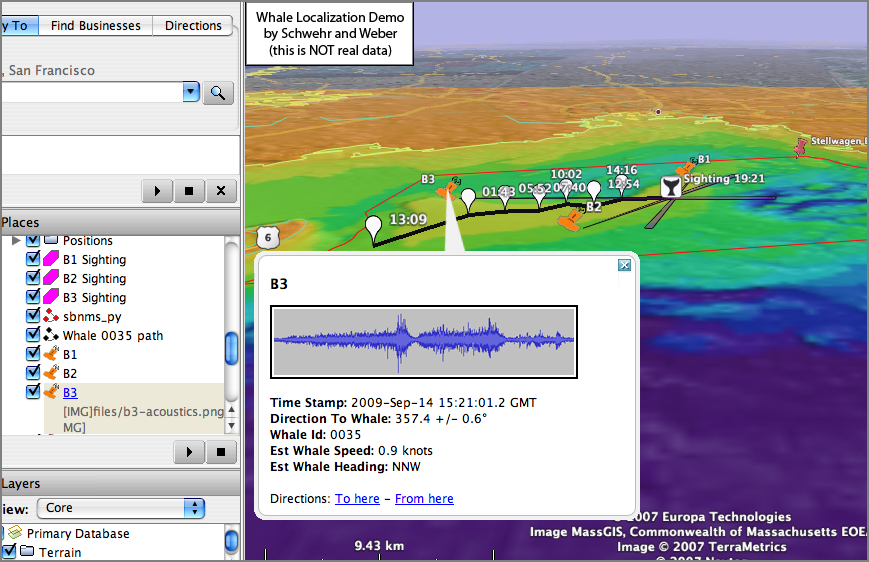
<br /><br />
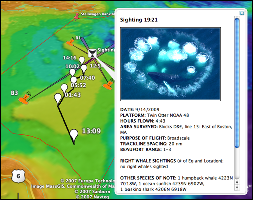
</div>
</div>

<div class="posted">
<br />Posted by <span class="item-creator">Kurt</span>
| <a class="link" href="2007-01.html#e2007-01-21T10_17_52.txt">Permalink</a>

<!-- <br /><a href="archives/2007-01-21T20_27_19.html#comments">Comments</a> -->
</div>
</div>
<div class="item">
<a id="e2007-01-19T15_10_15.txt" name="e2007-01-19T15_10_15.txt"></a>
<h2 class="date">01.19.2007 15:10</h2>
<div class="blogbody">
<h3 class="title">Back up after power outage</h3>
<div class="item-description">
UNH had another power outage today.  The story I heard is that a
transformer went at the TV station and took out most of the campus
with it.
</div>
</div>

<div class="posted">
<br />Posted by <span class="item-creator">Kurt</span>
| <a class="link" href="2007-01.html#e2007-01-19T15_10_15.txt">Permalink</a>

<!-- <br /><a href="archives/2007-01-21T10_17_52.html#comments">Comments</a> -->
</div>
</div>
<div class="item">
<a id="e2007-01-19T09_25_19.txt" name="e2007-01-19T09_25_19.txt"></a>
<h2 class="date">01.19.2007 09:25</h2>
<div class="blogbody">
<h3 class="title">Mac Optical drive info</h3>
<div class="item-description">
Want to know what your mac's optical drive is capable of?  I just
found this command yesterday and here are the results from my 4xG5
desktop. 
<pre>
drutil info
 Vendor   Product           Rev 
 HL-DT-ST DVD-RW GWA-4165B  C006
   Interconnect: ATAPI
   SupportLevel: Apple Shipping
          Cache: 2048k
       CD-Write: -R, -RW, BUFE, CDText, Test, IndexPts, ISRC
      DVD-Write: -R, -RW, +R, +R DL, +RW, BUFE, Test
     Strategies: CD-TAO, CD-SAO, CD-Raw, DVD-DAO
</pre>
</div>
</div>

<div class="posted">
<br />Posted by <span class="item-creator">Kurt</span>
| <a class="link" href="2007-01.html#e2007-01-19T09_25_19.txt">Permalink</a>

<!-- <br /><a href="archives/2007-01-19T15_10_15.html#comments">Comments</a> -->
</div>
</div>
<div class="item">
<a id="e2007-01-18T07_46_40.txt" name="e2007-01-18T07_46_40.txt"></a>
<h2 class="date">01.18.2007 07:46</h2>
<div class="blogbody">
<h3 class="title">NOAA Online: Block Island Sound</h3>
<div class="item-description">
<a
href="http://paddlingtravelers.blogspot.com/2007/01/noaa-online-block-island-sound.html#links">PaddingTravelers
on NOAA chart online.</a>
<br /><br />
It this really a NOAA server? 
<a href="http://205.156.4.52/cgi-bin/EyeSpy.dll?launchpad&D:/EyeSpy/images/Online_Chart_Viewer/13205.axs&wsx=750&wsy=550&amp;amp;amp;amp;bgcolor=ffffff&aligX=1&aligY=1">EyeSpy</a> [205.156.4.52]
<br /><br />
Maybe it is some sort of hosting thing.  But you can get there from
NOAA's Atlantic Coast Chart On-Line Viewer.
<pre>
traceroute 205.156.4.52
...
10  noaa-rtr.maxgigapop.net (206.196.177.98)  12.234 ms *  12.204 ms
11  140.90.75.131 (140.90.75.131)  12.345 ms  12.842 ms  12.360 ms
12  140.90.111.36 (140.90.111.36)  12.423 ms  12.355 ms *
*
...
</pre>
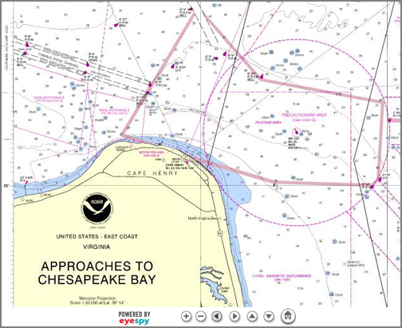
</div>
</div>

<div class="posted">
<br />Posted by <span class="item-creator">Kurt</span>
| <a class="link" href="2007-01.html#e2007-01-18T07_46_40.txt">Permalink</a>

<!-- <br /><a href="archives/2007-01-19T09_25_19.html#comments">Comments</a> -->
</div>
</div>
<div class="item">
<a id="e2007-01-18T07_37_09.txt" name="e2007-01-18T07_37_09.txt"></a>
<h2 class="date">01.18.2007 07:37</h2>
<div class="blogbody">
<h3 class="title">Updates to GoogleEarth documentation</h3>
<div class="item-description">
OGLE Earth <a
href="http://www.ogleearth.com/2007/01/kml_documentati.html">says</a>
Google has updated the KML documentation.
<br /><br />
<a href="http://earth.google.com/kml/kml_tut.html">KML Samples</a>
<br /><br />
<a href="http://earth.google.com/kml/kml_tut.html#kml_server">MIME types</a> for Apache.  This I need to try out.
<pre>
    AddType application/vnd.google-earth.kml+xml .kml
    AddType application/vnd.google-earth.kmz .kmz
</pre>
</div>
</div>

<div class="posted">
<br />Posted by <span class="item-creator">Kurt</span>
| <a class="link" href="2007-01.html#e2007-01-18T07_37_09.txt">Permalink</a>

<!-- <br /><a href="archives/2007-01-18T07_46_40.html#comments">Comments</a> -->
</div>
</div>
<div class="item">
<a id="e2007-01-17T20_19_00.txt" name="e2007-01-17T20_19_00.txt"></a>
<h2 class="date">01.17.2007 20:19</h2>
<div class="blogbody">
<h3 class="title">ISIS Planetary Image Processing for the Mac</h3>
<div class="item-description">
They still have this strange rsync software delivery process which
makes it impossible to integrate with fink, but I do appreciate the
Mac OSX support.
<pre>
===================================================
ISIS 3.1.5 RELEASE 2007/01/17 - Mac OS X Compatible
===================================================
A new version of Isis 3 is now available. For download and installation 
information please see the Isis 3 Installation Guide:
.
    http://isis.astrogeology.usgs.gov/documents/InstallGuide 
.
To view the release notes, click on the following link:
.
    http://isis.astrogeology.usgs.gov/IsisSupport/viewtopic.php?t=1130
.
If you are only interested in HiRISE processing, and/or are restricted 
as to the amount of space you have available for ISIS and its ancillary 
data, then you can choose to only install the base and MRO specific 
data areas. To do this, use the following commands: 
.
    - cd $ISISROOT/../data 
    - rsync -avz isisdist.wr.usgs.gov:isis3data/data/base . 
    - rsync -avz isisdist.wr.usgs.gov:isis3data/data/mro . 
.
If you have a multi-OS environment, it is possible, and recommended, 
that you set it up so all versions share the same data area. To do this, 
simply set the environment variable "ISIS3DATA" to the equivalent of 
"$ISISROOT/../data" *after* sourcing the ISIS3 startup file.
</pre>
</div>
</div>

<div class="posted">
<br />Posted by <span class="item-creator">Kurt</span>
| <a class="link" href="2007-01.html#e2007-01-17T20_19_00.txt">Permalink</a>

<!-- <br /><a href="archives/2007-01-18T07_37_09.html#comments">Comments</a> -->
</div>
</div>
<div class="item">
<a id="e2007-01-17T20_15_14.txt" name="e2007-01-17T20_15_14.txt"></a>
<h2 class="date">01.17.2007 20:15</h2>
<div class="blogbody">
<h3 class="title">0 degrees F</h3>
<div class="item-description">
I think AccuWeather needs to link about their algorithm for displaying
the low.  When the low of the day is above the current temperature,
perhaps something needs to be changed <br />

</div>
</div>

<div class="posted">
<br />Posted by <span class="item-creator">Kurt</span>
| <a class="link" href="2007-01.html#e2007-01-17T20_15_14.txt">Permalink</a>

<!-- <br /><a href="archives/2007-01-17T20_19_00.html#comments">Comments</a> -->
</div>
</div>
<div class="item">
<a id="e2007-01-16T10_59_09.txt" name="e2007-01-16T10_59_09.txt"></a>
<h2 class="date">01.16.2007 10:59</h2>
<div class="blogbody">
<h3 class="title">Tonight at 7PM - "Inconvenient Truth"</h3>
<div class="item-description">
<a href="http://www.seacoastonline.com/news/dover/12292006/nhnews-d-sierraclub12-29.html">Sierra Club to show 'Inconvenient Truth'</a> [seacoastonline.com]
<pre>
Join Seacoast Sierra Club to watch "An Inconvenient Truth" -- Al Gore's
shocking and inspiring movie about global warming and what we can do
about it -- Tuesday, Jan. 16, at 7 p.m. in the Dover CIty Hall
auditorium. Everyone is welcome.
</pre>
</div>
</div>

<div class="posted">
<br />Posted by <span class="item-creator">Kurt</span>
| <a class="link" href="2007-01.html#e2007-01-16T10_59_09.txt">Permalink</a>

<!-- <br /><a href="archives/2007-01-17T20_15_14.html#comments">Comments</a> -->
</div>
</div>
<div class="item">
<a id="e2007-01-13T18_57_46.txt" name="e2007-01-13T18_57_46.txt"></a>
<h2 class="date">01.13.2007 18:57</h2>
<div class="blogbody">
<h3 class="title">Notices to Airmen and Temporary Flight Restrictions using Google Map API</h3>
<div class="item-description">
From <a href="http://www.programmableweb.com/url/5686">ProgrammableWeb Mashup Detail: NOTAM Ace</a>:
<br /><br />
<a href="http://www.notamace.com/">Notices to Airmen and Temporary
Flight Restrictions using Google Map API</a> [notamace.com]
<br /><br />
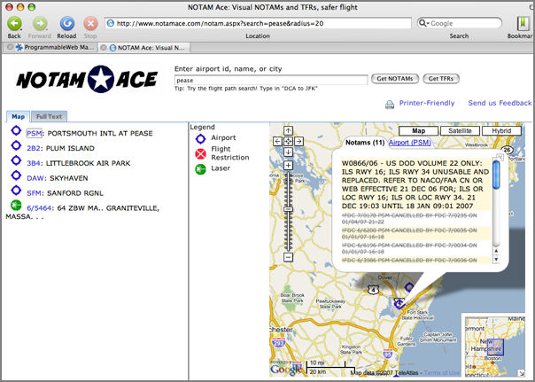
<br /><br />
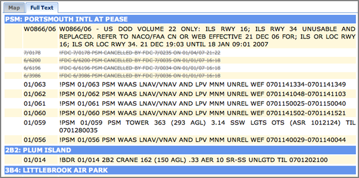
</div>
</div>

<div class="posted">
<br />Posted by <span class="item-creator">Kurt</span>
| <a class="link" href="2007-01.html#e2007-01-13T18_57_46.txt">Permalink</a>

<!-- <br /><a href="archives/2007-01-16T10_59_09.html#comments">Comments</a> -->
</div>
</div>
<div class="item">
<a id="e2007-01-13T17_55_39.txt" name="e2007-01-13T17_55_39.txt"></a>
<h2 class="date">01.13.2007 17:55</h2>
<div class="blogbody">
<h3 class="title">IRIS PC RADAR</h3>
<div class="item-description">
<a href="http://www.panbo.com/yae/archives/001483.html">Panbo has an
article</a> on the <a href="http://www.irisradar.com/index.html">Iris
PC Radar</a>.  The big questions for me are how much and does this
think have linux drivers?
</div>
</div>

<div class="posted">
<br />Posted by <span class="item-creator">Kurt</span>
| <a class="link" href="2007-01.html#e2007-01-13T17_55_39.txt">Permalink</a>

<!-- <br /><a href="archives/2007-01-13T18_57_46.html#comments">Comments</a> -->
</div>
</div>
<div class="item">
<a id="e2007-01-13T15_46_08.txt" name="e2007-01-13T15_46_08.txt"></a>
<h2 class="date">01.13.2007 15:46</h2>
<div class="blogbody">
<h3 class="title">Construct for python</h3>
<div class="item-description">
<a href="http://construct.wikispaces.com/">Construct</a> sounds pretty
exciting!  Can I use this to declare the contents of an AIS message at
the bit level?  Will it be much faster than BitVector?  From the web page...
<br /><br />
Being declarative means you directly define the data structure, not
the code that parses it. This means you can export your definition to
ML, or write a code generator that takes a construct and converts it
to a C module, just to name a few ideas.
<br /><br />
Features
<ul>
    <li> Bit-level - you can work with individual bits and non-aligned fields without hassle</li>
    <li> Byte ordering - supports both little and big endian byte ordering</li>
    <li> Componentized - combine the primitives into more complex constructs</li>
    <li> Symmetrical - constructs can both parse (create an object from raw data) and build (create raw data from an object)</li>
    <li> Ready - comes with many built-in primitives and inventory constructs that you can use out-of-the-box.</li>
    <li> Declarative - you write a data structure, not code.</li>
    <li> Easy to debug - much easier to correct a data structure instead of code</li>
    <li> Easy to test - componentization means that once a component works, it always works. You can easily share constructs between modules without something breaking.</li>
    <li> Easy to extend - when the need arises, just subclass your very own construct</li>
    <li> Thread-safe - Construct is fully thread safe; you can parse the same construct in parallel threads.</li>
</ul>
</div>
</div>

<div class="posted">
<br />Posted by <span class="item-creator">Kurt</span>
| <a class="link" href="2007-01.html#e2007-01-13T15_46_08.txt">Permalink</a>

<!-- <br /><a href="archives/2007-01-13T17_55_39.html#comments">Comments</a> -->
</div>
</div>
<div class="item">
<a id="e2007-01-12T15_02_14.txt" name="e2007-01-12T15_02_14.txt"></a>
<h2 class="date">01.12.2007 15:02</h2>
<div class="blogbody">
<h3 class="title">FlashEarth.com</h3>
<div class="item-description">
Compare different datasets... <a href="http://www.flashearth.com">www.flashearth.com</a>
<br /><br />
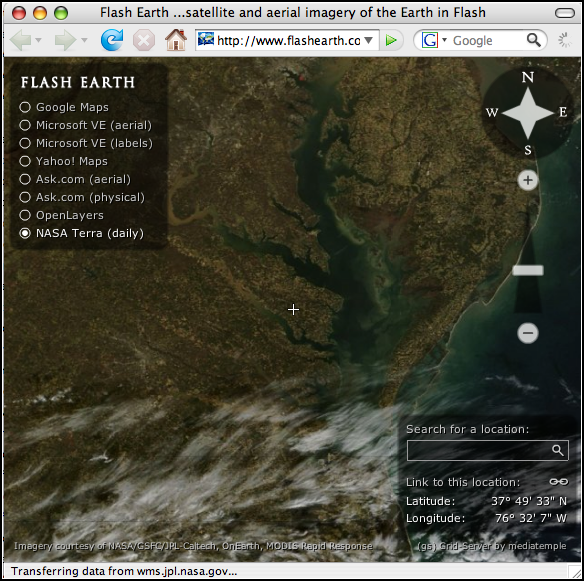
</div>
</div>

<div class="posted">
<br />Posted by <span class="item-creator">Kurt</span>
| <a class="link" href="2007-01.html#e2007-01-12T15_02_14.txt">Permalink</a>

<!-- <br /><a href="archives/2007-01-13T15_46_08.html#comments">Comments</a> -->
</div>
</div>
<div class="item">
<a id="e2007-01-12T14_41_35.txt" name="e2007-01-12T14_41_35.txt"></a>
<h2 class="date">01.12.2007 14:41</h2>
<div class="blogbody">
<h3 class="title">gdal 1.4.0 in fink</h3>
<div class="item-description">
I am just about to check in gdal 1.4.0 into fink.  Why is this so
interesting?  This lets anyone create a GoogleEarth S57 ENC in just a
couple minutes.
<br /><br />
For Mac users...
<pre>fink selfupdate
fink install gdal
</pre>
Go to <a
href="http://chartmaker.ncd.noaa.gov/mcd/enc/download.htm">NOAA
ENC</a>.  Scroll way down to PROCEED.  Select the "Textual" interface.
Change the "Show" drop down from 20 to 617.  Search for Cape Cod.
Check the box next to "Bay of Fundy to Cape Cod - US3EC10M".  Press
"Review Selections" at the top of the page.  Press "Order Selections."
Press "Download."
<br /><br />
Now unzip the file.  "cd ENC_ROOT/US3EC10M/" and run this command
(once you have gdal 1.4.0 installed).  
<pre>ogr2ogr -f KML US3EC10M.kml US3EC10M.000</pre>
Now run "open US3EC10M.kml" and turn
off all layers accept DSID, CBLSUB, COALNE, RECARE, RESARE, TSSBND,
TSSLPT, and USSARE.
<br /><br />
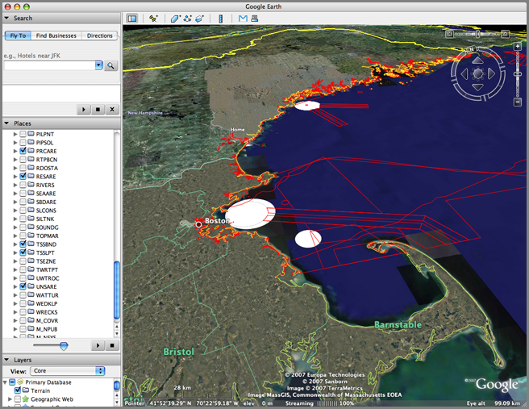
</div>
</div>

<div class="posted">
<br />Posted by <span class="item-creator">Kurt</span>
| <a class="link" href="2007-01.html#e2007-01-12T14_41_35.txt">Permalink</a>

<!-- <br /><a href="archives/2007-01-12T15_02_14.html#comments">Comments</a> -->
</div>
</div>
<div class="item">
<a id="e2007-01-12T10_24_29.txt" name="e2007-01-12T10_24_29.txt"></a>
<h2 class="date">01.12.2007 10:24</h2>
<div class="blogbody">
<h3 class="title">NOAA Estuarine Bathymetry in Google Earth</h3>
<div class="item-description">
<a
href="http://estuarinebathymetry.noaa.gov/finddata.html">http://estuarinebathymetry.noaa.gov/finddata.html</a>
- Data in Google Earth format.  Stops just at the point where I need
the data.  But still very cool.
<br /><br />
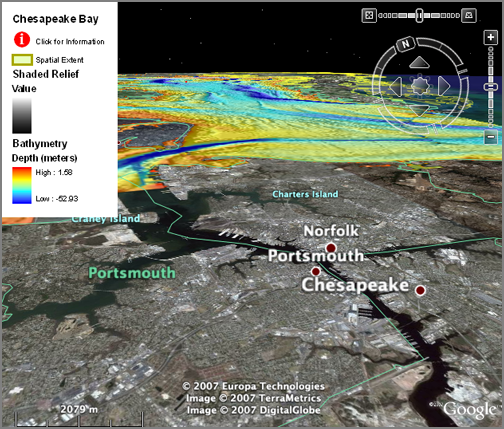
</div>
</div>

<div class="posted">
<br />Posted by <span class="item-creator">Kurt</span>
| <a class="link" href="2007-01.html#e2007-01-12T10_24_29.txt">Permalink</a>

<!-- <br /><a href="archives/2007-01-12T14_41_35.html#comments">Comments</a> -->
</div>
</div>
<div class="item">
<a id="e2007-01-12T09_53_50.txt" name="e2007-01-12T09_53_50.txt"></a>
<h2 class="date">01.12.2007 09:53</h2>
<div class="blogbody">
<h3 class="title">3Dconnexion SpaceNavigator on Mac</h3>
<div class="item-description">
What is the difference between the SpaceNavigator SE and PE?  The SE
gets you support phone calls for an extra $50.  Same hardware.
<br /><br />
I was all excited to install a SpaceNavigator on my Mac.  I had to
install the deta driver (3dxwaremacPE-v0_1_0.dmg) and restart my mac.
Now sketch crashes and I find this lovely set of messages in the system log.
<pre>
3DxSketchup Plug-in: [74] Initializing...
3DxSketchup Plug-in: [95] 3Dconnexion device init OK? 1
tdxInit OK.  clientid=8198
2007-01-12 09:41:00.231 3DxSketchUpHelper[620] #3DxSketchUpHelper#[34]
imgPath=/Library/Application Support/Google SketchUp
6/SketchUp/Plugins/3DxSketchUp.bundle.plugin/Contents/MacOS/3DxSketchUpHelper.app/Contents/Resources/banner.jpg
3DxSketchup Plug-in: active model not available
3DxSketchup Plug-in: active model not available
3DxSketchup Plug-in: [117] Initialization complete.
free_Command
free_Command
free_Command
free_Command
#3DxSketchUpHelper#
 /Users/ep/svn_seefeld/3dxsketchup/trunk/extension/macdev/../src/mac/HelperController.m[56]
 3DxSketchUpHelper is exiting...
3DxSketchup Plug-in: active model not available
terminate called after throwing an instance of 'std::logic_error'
  what():  3DxSketchup Plug-in: active model not available
</pre>
If I unplug the SpaceNavigator, start SketchUp 6, add come model
elements, then plug in the SpaceNavigator, then it works.  The mapping
is exactly opposite of what I expect.  You move the model, not the
camera, so I can barely move around with the device.  It takes about 10
minutes to get used to this mapping.
<br /><br />
After that first time of removing the SpaceNavigator, I can now kill
and start SkeptUp without any troubles while leaving the device
plugged in.
<br /><br />
This is all using a 4xG5 2.5 GHz PowerPC machine running 10.4.8 and
Google SketchUp 6.0.277.
</div>
</div>

<div class="posted">
<br />Posted by <span class="item-creator">Kurt</span>
| <a class="link" href="2007-01.html#e2007-01-12T09_53_50.txt">Permalink</a>

<!-- <br /><a href="archives/2007-01-12T10_24_29.html#comments">Comments</a> -->
</div>
</div>
<div class="item">
<a id="e2007-01-12T08_33_02.txt" name="e2007-01-12T08_33_02.txt"></a>
<h2 class="date">01.12.2007 08:33</h2>
<div class="blogbody">
<h3 class="title">ice/air boat</h3>
<div class="item-description">
Check out the Husky airboat that is good for on the ice.  <a
href="http://www.kare11.com/news/news_article.aspx?storyid=146319">Ice
no obstacle for new rescue boat</a> [NBC Saint Paul] How does the hull
look after a few weeks of using it?
<br /><br />
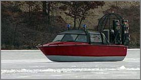
</div>
</div>

<div class="posted">
<br />Posted by <span class="item-creator">Kurt</span>
| <a class="link" href="2007-01.html#e2007-01-12T08_33_02.txt">Permalink</a>

<!-- <br /><a href="archives/2007-01-12T09_53_50.html#comments">Comments</a> -->
</div>
</div>
<div class="item">
<a id="e2007-01-11T08_17_44.txt" name="e2007-01-11T08_17_44.txt"></a>
<h2 class="date">01.11.2007 08:17</h2>
<div class="blogbody">
<h3 class="title">NOAA Volutary Observing Ship (VOS) Weather Feed in Google Earth</h3>
<div class="item-description">
<a href="http://destinsharks.com/maps-charts/157">NOAA Voluntary
Observing Ship (VOS) Weather Feed for Google Earth</a>
[destinsharks.com]
</div>
</div>

<div class="posted">
<br />Posted by <span class="item-creator">Kurt</span>
| <a class="link" href="2007-01.html#e2007-01-11T08_17_44.txt">Permalink</a>

<!-- <br /><a href="archives/2007-01-12T08_33_02.html#comments">Comments</a> -->
</div>
</div>
<div class="item">
<a id="e2007-01-10T11_51_07.txt" name="e2007-01-10T11_51_07.txt"></a>
<h2 class="date">01.10.2007 11:51</h2>
<div class="blogbody">
<h3 class="title">Comments on SOAP</h3>
<div class="item-description">
Wow... this is kind of how I have been feeling about SOAP.  My 1st day
with SOAP was great.  Then I learn that the SOAP library I was using
is no longer supported (SOAPpy).  Then I learned that ZSI and Apache
Axis do not play well together.  Then I tried just creating a SOAP
request and parsing the reply myself.  Then I tried OPeNDAP.
<br /><br />
<a href="http://wanderingbarque.com/nonintersecting/2006/11/15/the-s-stands-for-simple/">The S Stands For Simple</a>
</div>
</div>

<div class="posted">
<br />Posted by <span class="item-creator">Kurt</span>
| <a class="link" href="2007-01.html#e2007-01-10T11_51_07.txt">Permalink</a>

<!-- <br /><a href="archives/2007-01-11T08_17_44.html#comments">Comments</a> -->
</div>
</div>
<div class="item">
<a id="e2007-01-09T22_36_07.txt" name="e2007-01-09T22_36_07.txt"></a>
<h2 class="date">01.09.2007 22:36</h2>
<div class="blogbody">
<h3 class="title">Simplest python C module</h3>
<div class="item-description">
Here is about the simplest possible C module (taken from <a
href="http://www.pyzine.com/Issue001/Section_Articles/article_EPwCPartI.html">Extending
Python with C: Part 1</a>[pyzine].  First the C source (tiny.c):
<pre>
<font color="0000ff"><strong>#include <font color="#008000">&lt;Python.h&gt;</font></strong></font>
<font color="#444444">/* the function that is callable from python */</font>
<strong>static</strong> <font color="#2040a0">PyObject</font><font color="4444FF">*</font>
<font color="#2040a0">tiny</font><font color="4444FF">(</font><font color="#2040a0">PyObject</font><font color="4444FF">*</font> <font color="#2040a0">self</font>, <font color="#2040a0">PyObject</font><font color="4444FF">*</font> <font color="#2040a0">args</font><font color="4444FF">)</font>   <font color="#444444">/* proto for all exposed funcs */</font>
<font color="4444FF"><strong>{</strong></font>
    <strong>if</strong><font color="4444FF">(</font><font color="4444FF">!</font><font color="#2040a0">PyArg_ParseTuple</font><font color="4444FF">(</font><font color="#2040a0">args</font>, <font color="#008000">&quot;&quot;</font><font color="4444FF">)</font><font color="4444FF">)</font>    <font color="#444444">/* receive arguments (no args) */</font>
	<strong>return</strong> <font color="#FF0000">0</font><font color="4444FF">;</font>                      <font color="#444444">/* propagate error if any */</font>
    <strong>return</strong> <font color="#2040a0">Py_BuildValue</font><font color="4444FF">(</font><font color="#008000">&quot;s&quot;</font>,<font color="#008000">&quot;it works!&quot;</font><font color="4444FF">)</font><font color="4444FF">;</font> <font color="#444444">/* build and return result */</font>
<font color="4444FF"><strong>}</strong></font>
<font color="#444444">/* Lookup table of functions */</font>
<strong>static</strong> <font color="#2040a0">PyMethodDef</font> <font color="#2040a0">tinyMethods</font><font color="4444FF">[</font><font color="4444FF">]</font> <font color="4444FF">=</font> <font color="4444FF"><strong>{</strong></font>   <font color="#444444">/* methods exposed from module */</font>
    <font color="4444FF"><strong>{</strong></font><font color="#008000">&quot;tiny&quot;</font>, <font color="#2040a0">tiny</font>, <font color="#2040a0">METH_VARARGS</font>, <font color="#008000">&quot;A tiny function&quot;</font><font color="4444FF"><strong>}</strong></font>,    <font color="#444444">/* descriptor */</font>
    <font color="4444FF"><strong>{</strong></font><font color="#FF0000">0</font><font color="4444FF"><strong>}</strong></font>                                                 <font color="#444444">/* sentinel   */</font>
<font color="4444FF"><strong>}</strong></font><font color="4444FF">;</font>
<font color="#444444">/*  Hook into python */</font>
<strong>void</strong>
<font color="#2040a0">inittiny</font><font color="4444FF">(</font><strong>void</strong><font color="4444FF">)</font>                             <font color="#444444">/* called by Python on import */</font>
<font color="4444FF"><strong>{</strong></font>
    <font color="#2040a0">Py_InitModule</font><font color="4444FF">(</font><font color="#008000">&quot;tiny&quot;</font>, <font color="#2040a0">tinyMethods</font><font color="4444FF">)</font><font color="4444FF">;</font>  <font color="#444444">/* init module with methods */</font>
<font color="4444FF"><strong>}</strong></font>
</pre>
Here is the distutils based setup.py file that compiles the code.
<pre>
<font color="#444444">#!/usr/bin/env python</font>
<strong>from</strong> <font color="#2040a0">distutils</font>.<font color="#2040a0">core</font> <strong>import</strong> <font color="#2040a0">setup</font>, <font color="#2040a0">Extension</font>
<font color="#2040a0">setup</font><font color="4444FF">(</font>
    <font color="#2040a0">name</font><font color="4444FF">=</font><font color="#008000">&quot;samples&quot;</font>, 
    <font color="#2040a0">version</font><font color="4444FF">=</font><font color="#008000">&quot;0.1&quot;</font>,
    <font color="#2040a0">ext_modules</font> <font color="4444FF">=</font> <font color="4444FF">[</font>
	<font color="#2040a0">Extension</font><font color="4444FF">(</font><font color="#008000">&quot;tiny&quot;</font>,<font color="4444FF">[</font><font color="#008000">&quot;tiny.c&quot;</font><font color="4444FF">]</font><font color="4444FF">)</font>
	<font color="4444FF">]</font>
    <font color="4444FF">)</font>
</pre>
Now install and run the module.  This is for python2.5 on fink/mac
osx.  The path will be different on other systems.
<pre>
chmod +x setup.py
mkdir inst
./setup.py install --root=inst
  running install
  running build
  running build_ext
  building 'tiny' extension
  gcc -fno-strict-aliasing -Wno-long-double -no-cpp-precomp -mno-fused-madd -DNDEBUG -g -O3 -Wall -Wstrict-prototypes -I/sw/include/python2.5 -c tiny.c -o build/temp.macosx-10.4-ppc-2.5/tiny.o
g  cc -L/sw/lib -bundle -undefined dynamic_lookup build/temp.macosx-10.4-ppc-2.5/tiny.o -o build/lib.macosx-10.4-ppc-2.5/tiny.so
  running install_lib
  copying build/lib.macosx-10.4-ppc-2.5/tiny.so -> inst/sw/lib/python2.5/site-packages
  running install_egg_info
  Removing inst/sw/lib/python2.5/site-packages/samples-0.1-py2.5.egg-info
  Writing inst/sw/lib/python2.5/site-packages/samples-0.1-py2.5.egg-info
<br /><br />
PYTHONPATH=inst/sw/lib/python2.5/site-packages ipython
In [1]: import tiny
In [2]: tiny.tiny()
Out[2]: 'it works!'
</pre>
Tiny has limited documentation.
<pre>
help (tiny.tiny)
Help on built-in function tiny in module tiny:
<br /><br />
tiny(...)
    A tiny function
</pre>
</div>
</div>

<div class="posted">
<br />Posted by <span class="item-creator">Kurt</span>
| <a class="link" href="2007-01.html#e2007-01-09T22_36_07.txt">Permalink</a>

<!-- <br /><a href="archives/2007-01-10T11_51_07.html#comments">Comments</a> -->
</div>
</div>
<div class="item">
<a id="e2007-01-09T16_24_26.txt" name="e2007-01-09T16_24_26.txt"></a>
<h2 class="date">01.09.2007 16:24</h2>
<div class="blogbody">
<h3 class="title">Google Earth 4 released</h3>
<div class="item-description">
Google Earth 4 is now officially released.  My copy on the mac says it
is version 4.0.2722.
<br /><br />
<a href="http://earth.google.com/download-earth.html">http://earth.google.com/download-earth.html</a>
</div>
</div>

<div class="posted">
<br />Posted by <span class="item-creator">Kurt</span>
| <a class="link" href="2007-01.html#e2007-01-09T16_24_26.txt">Permalink</a>

<!-- <br /><a href="archives/2007-01-09T22_36_07.html#comments">Comments</a> -->
</div>
</div>
<div class="item">
<a id="e2007-01-09T15_50_34.txt" name="e2007-01-09T15_50_34.txt"></a>
<h2 class="date">01.09.2007 15:50</h2>
<div class="blogbody">
<h3 class="title">Apple iPhone</h3>
<div class="item-description">
<a href="http://www.apple.com/iphone/"></a>
<br /><br />
Available in June and definitely out of my price range.  This text
from their website is a little strange.  Would have thought that they
would have gotten approval first.  Perhaps the process would have blown
the secrecy.
<pre>This device has not been authorized as required by the rules of
the Federal Communications Commission. This device is not, and may not
be, offered for sale or lease, or sold or leased, until authorization
is obtained.</pre>
</div>
</div>

<div class="posted">
<br />Posted by <span class="item-creator">Kurt</span>
| <a class="link" href="2007-01.html#e2007-01-09T15_50_34.txt">Permalink</a>

<!-- <br /><a href="archives/2007-01-09T16_24_26.html#comments">Comments</a> -->
</div>
</div>
<div class="item">
<a id="e2007-01-09T15_11_52.txt" name="e2007-01-09T15_11_52.txt"></a>
<h2 class="date">01.09.2007 15:11</h2>
<div class="blogbody">
<h3 class="title">Python - C/C++ integration</h3>
<div class="item-description">
Integrating existing C/C++ code or converting python to C/C++ are
common tasks for python folks.  There are many ways to attack this
problem.  Which one you use depends on many factors, but here are some
starting points.
<br /><br />
<br /><br />
<ul>
<li> ctypes 
     <ul>
       <li><a href="http://sourceforge.net/project/showfiles.php?group_id=71702">ctypes at sf</a> - pre-inclusion to python 2.5 </li>
       <li><a href="http://docs.python.org/dev/lib/module-ctypes.html">ctypes in python 2.5</a></li>
       <li><a href="http://python.net/crew/theller/ctypes/">header to ctypes</a></li>
     </ul>
</li>
<li><a href="http://www.swig.org/">SWIG</a> - build interfaces for many languages</li>
<li><a href="http://docs.python.org/ext/ext.html">Extending and Embedding the Python Interpreter</a> [docs.python.org]</li>
<li><a href="http://docs.python.org/api/">Python/C API Reference Manual</a> [docs.python.org]</li>
<li><a href="http://www.riverbankcomputing.co.uk/sip/">SIP</a> - created for PyQT</li>
<li><a href="http://cxx.sourceforge.net/">PyCXX</a> - inline C code</li>
<li><a href="http://www.scipy.org/Weave">Weave</a> - another inlining package [scipy.org] </li>
<li><a href="http://heim.ifi.uio.no/~kent-and/software/Instant/doc/Instant.html">Instant</a> inlining of C/C++ code in Python. ("built on top of SWIG" but claims to only work on unix systems)  </li>
<li><a href="http://www.cosc.canterbury.ac.nz/greg.ewing/python/Pyrex/">PyRex</a></li>
<li><a href="http://pyinline.sourceforge.net/">PyInline</a></li>
</ul>
That is quite a list of options.
</div>
</div>

<div class="posted">
<br />Posted by <span class="item-creator">Kurt</span>
| <a class="link" href="2007-01.html#e2007-01-09T15_11_52.txt">Permalink</a>

<!-- <br /><a href="archives/2007-01-09T15_50_34.html#comments">Comments</a> -->
</div>
</div>
<div class="item">
<a id="e2007-01-09T11_37_55.txt" name="e2007-01-09T11_37_55.txt"></a>
<h2 class="date">01.09.2007 11:37</h2>
<div class="blogbody">
<h3 class="title">US sub hits Japanesse ship</h3>
<div class="item-description">
From the Fairplay Daily News Headlines:
<pre>
<b>US nuclear sub hits Japanese VLCC</b>
NO injuries have been reported after a US Navy submarine collided with
a Japanese VLCC south of the Straits of Hormuz last night.
</pre>
</div>
</div>

<div class="posted">
<br />Posted by <span class="item-creator">Kurt</span>
| <a class="link" href="2007-01.html#e2007-01-09T11_37_55.txt">Permalink</a>

<!-- <br /><a href="archives/2007-01-09T15_11_52.html#comments">Comments</a> -->
</div>
</div>
<div class="item">
<a id="e2007-01-09T09_07_39.txt" name="e2007-01-09T09_07_39.txt"></a>
<h2 class="date">01.09.2007 09:07</h2>
<div class="blogbody">
<h3 class="title">Google SketchUp 6 released</h3>
<div class="item-description">
I haven't even had a chance to touch the last version that is installed on my machine, but <a href="http://sketchup.google.com/product_suf.html">Google SketchUp</a> 6 was just released.
</div>
</div>

<div class="posted">
<br />Posted by <span class="item-creator">Kurt</span>
| <a class="link" href="2007-01.html#e2007-01-09T09_07_39.txt">Permalink</a>

<!-- <br /><a href="archives/2007-01-09T11_37_55.html#comments">Comments</a> -->
</div>
</div>
<div class="item">
<a id="e2007-01-09T09_06_00.txt" name="e2007-01-09T09_06_00.txt"></a>
<h2 class="date">01.09.2007 09:06</h2>
<div class="blogbody">
<h3 class="title">3Dconnexion spacenavigator for Mac OSX</h3>
<div class="item-description">
<a
href="http://www.gearthblog.com/blog/archives/2007/01/spacenavigator_works.html">SpaceNavigator
Works on Mac OS X</a> [GoogleEarthBlog]
<br /><br />
Have to grab the one that our lab has and give it a try today.
</div>
</div>

<div class="posted">
<br />Posted by <span class="item-creator">Kurt</span>
| <a class="link" href="2007-01.html#e2007-01-09T09_06_00.txt">Permalink</a>

<!-- <br /><a href="archives/2007-01-09T09_07_39.html#comments">Comments</a> -->
</div>
</div>
<div class="item">
<a id="e2007-01-08T15_51_54.txt" name="e2007-01-08T15_51_54.txt"></a>
<h2 class="date">01.08.2007 15:51</h2>
<div class="blogbody">
<h3 class="title">MIT Open Course Ware - Spatial Data Systems classes</h3>
<div class="item-description">
Check out these two courses at MIT...  How different would these
courses be if they were taught in 2007 instead of 2003/4?
<br /><br />
<a href="http://ocw.mit.edu/OcwWeb/Urban-Studies-and-Planning/11-521Spatial-Database-Management-and-Advanced-Geographic-Information-SystemsSpring2003/CourseHome/index.htm">Spatial Database Management and Advanced Geographic Information Systems</a>
<br /><br />
<a href="http://ocw.mit.edu/OcwWeb/Civil-and-Environmental-Engineering/1-963Fall-2004/CourseHome/index.htm">Environmental Engineering Applications of Geographic Information Systems</a>
</div>
</div>

<div class="posted">
<br />Posted by <span class="item-creator">Kurt</span>
| <a class="link" href="2007-01.html#e2007-01-08T15_51_54.txt">Permalink</a>

<!-- <br /><a href="archives/2007-01-09T09_06_00.html#comments">Comments</a> -->
</div>
</div>
<div class="item">
<a id="e2007-01-08T10_15_54.txt" name="e2007-01-08T10_15_54.txt"></a>
<h2 class="date">01.08.2007 10:15</h2>
<div class="blogbody">
<h3 class="title">Google Earth textured buildings</h3>
<div class="item-description">
Google Earth now has texture mapped buildings.  Go google!  Here is on
in San Francisco.  Just wish they would get to the Hampton
Roads/Norfolk area!
<br /><br />

</div>
</div>

<div class="posted">
<br />Posted by <span class="item-creator">Kurt</span>
| <a class="link" href="2007-01.html#e2007-01-08T10_15_54.txt">Permalink</a>

<!-- <br /><a href="archives/2007-01-08T15_51_54.html#comments">Comments</a> -->
</div>
</div>
<div class="item">
<a id="e2007-01-08T09_22_09.txt" name="e2007-01-08T09_22_09.txt"></a>
<h2 class="date">01.08.2007 09:22</h2>
<div class="blogbody">
<h3 class="title">Google Earth updating issues</h3>
<div class="item-description">
Looks like Google is still working out deployment issues with Google
Earth.  Yesterday, I checked for updates to GE on the mac and GE
claimed there were none.  Knowing otherwise, I downloaded a new
version from the web.  Today, I tried the same on another computer.  I
got the download, installed it, and it immediately said that I should
update... wow.  But my copy was just 2 minutes old.  Then when I down
loaded what was supposed to be 4.0.2723, it claims to be 4.0.2722 with
a build date of a few days ago.... and it does not prompt me for a new
version.  When I go into check of updates, it wants me to download yet
another dmg.  This is quirky, but not really a big deal.
<br /><br />
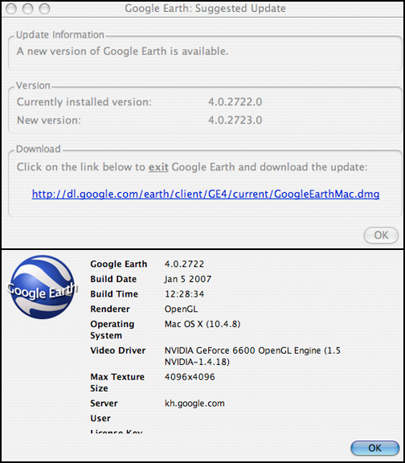
</div>
</div>

<div class="posted">
<br />Posted by <span class="item-creator">Kurt</span>
| <a class="link" href="2007-01.html#e2007-01-08T09_22_09.txt">Permalink</a>

<!-- <br /><a href="archives/2007-01-08T10_15_54.html#comments">Comments</a> -->
</div>
</div>
<div class="item">
<a id="e2007-01-07T14_58_00.txt" name="e2007-01-07T14_58_00.txt"></a>
<h2 class="date">01.07.2007 14:58</h2>
<div class="blogbody">
<h3 class="title">PPC/Intel Mac OSX endian</h3>
<div class="item-description">
JJ has been looking into handling byte order issues between Mac OSX on
PPC and x86.  I only have a PPC mac right now.  Here is my quick
exploration of endian.  I should see what works on an x86 box, but I'm
not on the net, nor do I have the <a
href="http://www.kberg.ch/q/">qemu</a> simulator installed that would
give me a whole bunch of os images to try.  Is there a vms emulator
out there?  That would be a twisted flashback to the late 80's
(e.g. {hal,gal}.arc.nasa.gov to anyone who remembers those boxes).
<br /><br />
I dug through the headers on my system and found these macros.  I
don't know if any are a part of a standard.
<pre>
<font color="#444444">// g++ -o endian -Wall -g3 endian.C</font>
<font color="0000ff"><strong>#include <font color="#008000">&lt;iostream&gt;</font></strong></font>
<font color="0000ff"><strong>#include <font color="#008000">&lt;sys/sysctl.h&gt;</font></strong></font>
<strong>using</strong> <strong>namespace</strong> <font color="#2040a0">std</font><font color="4444FF">;</font>
<strong>int</strong> <font color="#2040a0">main</font><font color="4444FF">(</font><strong>int</strong> <font color="#2040a0">argc</font>, <strong>char</strong> <font color="4444FF">*</font><font color="#2040a0">argv</font><font color="4444FF">[</font><font color="4444FF">]</font><font color="4444FF">)</font> <font color="4444FF"><strong>{</strong></font>
    <font color="#444444">// sys/wait.h</font>
    <font color="#2040a0">cout</font> <font color="4444FF">&lt;</font><font color="4444FF">&lt;</font> <font color="#008000">&quot;__DARWIN_BYTE_ORDER    &quot;</font> <font color="4444FF">&lt;</font><font color="4444FF">&lt;</font> <font color="#2040a0">__DARWIN_BYTE_ORDER</font> <font color="4444FF">&lt;</font><font color="4444FF">&lt;</font> <font color="#008000">&quot;<font color="#77dd77">\n</font>&quot;</font><font color="4444FF">;</font>
    <font color="#2040a0">cout</font> <font color="4444FF">&lt;</font><font color="4444FF">&lt;</font> <font color="#008000">&quot;__DARWIN_LITTLE_ENDIAN &quot;</font> <font color="4444FF">&lt;</font><font color="4444FF">&lt;</font> <font color="#2040a0">__DARWIN_LITTLE_ENDIAN</font> <font color="4444FF">&lt;</font><font color="4444FF">&lt;</font> <font color="#008000">&quot;<font color="#77dd77">\n</font>&quot;</font><font color="4444FF">;</font>
    <font color="#2040a0">cout</font> <font color="4444FF">&lt;</font><font color="4444FF">&lt;</font> <font color="#008000">&quot;__DARWIN_BIG_ENDIAN    &quot;</font> <font color="4444FF">&lt;</font><font color="4444FF">&lt;</font> <font color="#2040a0">__DARWIN_BIG_ENDIAN</font> <font color="4444FF">&lt;</font><font color="4444FF">&lt;</font> <font color="#008000">&quot;<font color="#77dd77">\n</font>&quot;</font><font color="4444FF">;</font>
    <font color="#444444">// sys/sysctl.h</font>
    <font color="#2040a0">cout</font> <font color="4444FF">&lt;</font><font color="4444FF">&lt;</font> <font color="#008000">&quot;HW_BYTEORDER           &quot;</font> <font color="4444FF">&lt;</font><font color="4444FF">&lt;</font> <font color="#2040a0">HW_BYTEORDER</font> <font color="4444FF">&lt;</font><font color="4444FF">&lt;</font> <font color="#008000">&quot;<font color="#77dd77">\n</font>&quot;</font><font color="4444FF">;</font>
    <font color="#444444">// libkern/OSByteOrder.h</font>
<font color="0000ff"><strong>#ifdef __LITTLE_ENDIAN__    </strong></font>
    <font color="#2040a0">cout</font> <font color="4444FF">&lt;</font><font color="4444FF">&lt;</font> <font color="#008000">&quot;__LITTLE_ENDIAN__      &quot;</font> <font color="4444FF">&lt;</font><font color="4444FF">&lt;</font><font color="#2040a0">__LITTLE_ENDIAN__</font>  <font color="4444FF">&lt;</font><font color="4444FF">&lt;</font> <font color="#008000">&quot;<font color="#77dd77">\n</font>&quot;</font><font color="4444FF">;</font>
<font color="0000ff"><strong>#endif</strong></font>
<font color="0000ff"><strong>#ifdef __BIG_ENDIAN__    </strong></font>
    <font color="#2040a0">cout</font> <font color="4444FF">&lt;</font><font color="4444FF">&lt;</font> <font color="#008000">&quot;__BIG_ENDIAN__         &quot;</font> <font color="4444FF">&lt;</font><font color="4444FF">&lt;</font> <font color="#2040a0">__BIG_ENDIAN__</font> <font color="4444FF">&lt;</font><font color="4444FF">&lt;</font> <font color="#008000">&quot;<font color="#77dd77">\n</font>&quot;</font><font color="4444FF">;</font>
<font color="0000ff"><strong>#endif</strong></font>
    <strong>return</strong> <font color="#2040a0">EXIT_SUCCESS</font><font color="4444FF">;</font>
<font color="4444FF"><strong>}</strong></font>
</pre>
Here is what I get on my G4:
<pre>
./endian 
__DARWIN_BYTE_ORDER    4321
__DARWIN_LITTLE_ENDIAN 1234
__DARWIN_BIG_ENDIAN    4321
HW_BYTEORDER           4
__BIG_ENDIAN__         1
</pre>
I really wish that there was a standard unix command line tool that
gave details on byte order and formats for both integers and floats.
<br /><br />
For reference, here is a program from my density package tells the
endian for a machine.  It doesn't handle some of the stranger endians.
<pre>
<font color="0000ff"><strong>#include <font color="#008000">&lt;cstdio&gt;</font></strong></font>
<font color="0000ff"><strong>#include <font color="#008000">&lt;cstdlib&gt;</font></strong></font>
<strong>using</strong> <strong>namespace</strong> <font color="#2040a0">std</font><font color="4444FF">;</font>
<strong>int</strong> <font color="#2040a0">main</font><font color="4444FF">(</font><strong>void</strong><font color="4444FF">)</font> <font color="4444FF"><strong>{</strong></font>
  <strong>int</strong> <font color="#2040a0">s</font><font color="4444FF">;</font>
  <strong>char</strong> <font color="4444FF">*</font><font color="#2040a0">c</font><font color="4444FF">=</font><font color="4444FF">(</font><strong>char</strong> <font color="4444FF">*</font><font color="4444FF">)</font><font color="4444FF">&amp;</font><font color="#2040a0">s</font><font color="4444FF">;</font>
  <font color="#2040a0">c</font><font color="4444FF">[</font><font color="#FF0000">0</font><font color="4444FF">]</font><font color="4444FF">=</font><font color="#FF0000">0x00</font><font color="4444FF">;</font> <font color="#2040a0">c</font><font color="4444FF">[</font><font color="#FF0000">1</font><font color="4444FF">]</font><font color="4444FF">=</font><font color="#FF0000">0x01</font><font color="4444FF">;</font> <font color="#2040a0">c</font><font color="4444FF">[</font><font color="#FF0000">2</font><font color="4444FF">]</font><font color="4444FF">=</font><font color="#FF0000">0x02</font><font color="4444FF">;</font> <font color="#2040a0">c</font><font color="4444FF">[</font><font color="#FF0000">3</font><font color="4444FF">]</font><font color="4444FF">=</font><font color="#FF0000">0x03</font><font color="4444FF">;</font>
  <strong>if</strong> <font color="4444FF">(</font><font color="#FF0000">0x00010203</font><font color="4444FF">=</font><font color="4444FF">=</font><font color="#2040a0">s</font><font color="4444FF">)</font> <font color="4444FF"><strong>{</strong></font><font color="#2040a0">printf</font><font color="4444FF">(</font><font color="#008000">&quot;BIGENDIAN&quot;</font>   <font color="4444FF">)</font><font color="4444FF">;</font><strong>return</strong><font color="4444FF">(</font><font color="#2040a0">EXIT_SUCCESS</font><font color="4444FF">)</font><font color="4444FF">;</font><font color="4444FF"><strong>}</strong></font>
  <strong>if</strong> <font color="4444FF">(</font><font color="#FF0000">0x03020100</font><font color="4444FF">=</font><font color="4444FF">=</font><font color="#2040a0">s</font><font color="4444FF">)</font> <font color="4444FF"><strong>{</strong></font><font color="#2040a0">printf</font><font color="4444FF">(</font><font color="#008000">&quot;LITTLEENDIAN&quot;</font><font color="4444FF">)</font><font color="4444FF">;</font><strong>return</strong><font color="4444FF">(</font><font color="#2040a0">EXIT_SUCCESS</font><font color="4444FF">)</font><font color="4444FF">;</font><font color="4444FF"><strong>}</strong></font>
  <font color="#2040a0">printf</font><font color="4444FF">(</font><font color="#008000">&quot;ERROR!!!  I can not cope with this beast... HELP!!!!<font color="#77dd77">\n</font>&quot;</font><font color="4444FF">)</font><font color="4444FF">;</font>
  <strong>return</strong> <font color="4444FF">(</font><font color="#2040a0">EXIT_FAILURE</font><font color="4444FF">)</font><font color="4444FF">;</font>
<font color="4444FF"><strong>}</strong></font>
</pre>
There are also are all the byte order handling like utonl, htons,
ntohl, and ntohs.  
<br /><br />
If someone has a really great reference on dealing with these nagging
issues, please send me a link to it!
</div>
</div>

<div class="posted">
<br />Posted by <span class="item-creator">Kurt</span>
| <a class="link" href="2007-01.html#e2007-01-07T14_58_00.txt">Permalink</a>

<!-- <br /><a href="archives/2007-01-08T09_22_09.html#comments">Comments</a> -->
</div>
</div>
<div class="item">
<a id="e2007-01-07T10_39_05.txt" name="e2007-01-07T10_39_05.txt"></a>
<h2 class="date">01.07.2007 10:39</h2>
<div class="blogbody">
<h3 class="title">macro photography</h3>
<div class="item-description">
I got inspired to play with my point and shoot Nikon Coolpix 4600 by
<a href="http://www.jwz.org/photos/2007-01-05-underwood/">jwz's macro
photos</a>.  My camera and lense are not even close to the quality of
his, but it was still fun to try it out.
<br /><br />

</div>
</div>

<div class="posted">
<br />Posted by <span class="item-creator">Kurt</span>
| <a class="link" href="2007-01.html#e2007-01-07T10_39_05.txt">Permalink</a>

<!-- <br /><a href="archives/2007-01-07T14_58_00.html#comments">Comments</a> -->
</div>
</div>
<div class="item">
<a id="e2007-01-06T13_27_26.txt" name="e2007-01-06T13_27_26.txt"></a>
<h2 class="date">01.06.2007 13:27</h2>
<div class="blogbody">
<h3 class="title">Bruce Schneier on licensing boaters</h3>
<div class="item-description">
<a
href="http://www.schneier.com/blog/archives/2007/01/licensing_boats.html">Schneier
on Security: Licensing Boaters</a>
<br /><br />
<pre>There are lots of good reasons to license boats and boaters, just
as there are to license cars and drivers. But counterterrorism is not
one of them.</pre>
</div>
</div>

<div class="posted">
<br />Posted by <span class="item-creator">Kurt</span>
| <a class="link" href="2007-01.html#e2007-01-06T13_27_26.txt">Permalink</a>

<!-- <br /><a href="archives/2007-01-07T10_39_05.html#comments">Comments</a> -->
</div>
</div>
<div class="item">
<a id="e2007-01-06T13_21_51.txt" name="e2007-01-06T13_21_51.txt"></a>
<h2 class="date">01.06.2007 13:21</h2>
<div class="blogbody">
<h3 class="title">Multifocus composite image</h3>
<div class="item-description">
Saw this linked from JWZ's livejournal site.  Nice to see some of the
content that was on reality.sgi.com come back from the dead.
<br /><br />
<a href="http://www.graficaobscura.com/depth/index.html">A Multifocus
Method for Controlling Depth of Field</a> page by Paul Haeberli.
Similiar to the depth from focus done by Mark Lemmon with the MER
microscopic imager (accept that the camera was moved, not the focus of
the camera).
<br /><br />

</div>
</div>

<div class="posted">
<br />Posted by <span class="item-creator">Kurt</span>
| <a class="link" href="2007-01.html#e2007-01-06T13_21_51.txt">Permalink</a>

<!-- <br /><a href="archives/2007-01-06T13_27_26.html#comments">Comments</a> -->
</div>
</div>
<div class="item">
<a id="e2007-01-06T13_13_35.txt" name="e2007-01-06T13_13_35.txt"></a>
<h2 class="date">01.06.2007 13:13</h2>
<div class="blogbody">
<h3 class="title">How is this winter?</h3>
<div class="item-description">
This Dashboard image does not even say it all.  It is over 60 degrees
F and sunny.  Is this really New Hampshire???
<br /><br />

</div>
</div>

<div class="posted">
<br />Posted by <span class="item-creator">Kurt</span>
| <a class="link" href="2007-01.html#e2007-01-06T13_13_35.txt">Permalink</a>

<!-- <br /><a href="archives/2007-01-06T13_21_51.html#comments">Comments</a> -->
</div>
</div>
<div class="item">
<a id="e2007-01-05T15_37_45.txt" name="e2007-01-05T15_37_45.txt"></a>
<h2 class="date">01.05.2007 15:37</h2>
<div class="blogbody">
<h3 class="title">Waterlevel messages to kml</h3>
<div class="item-description">
I just gave the waterlevel messages a go to verify that I could take a
NMEA string for a binary message and extract a kml placemark.
<br /><br />
First get the binary payload from the msg 8 packet:
<pre>./ais_msg_8.py -d -t nmea '!AIVDM,1,1,,A,8E2HH<h1\
KY014cF0>=dtdd<=B4qI:`Zd0000?3@qF000BeH0,0*12'
BinaryData:
        MessageID:        8
        RepeatIndicator:  1
        UserID:           338040883
        Spare:            0
        BinaryData:       000000010110111000010000000\
00001000100101011010110000000001110001101101100111100\
101100101100001100001101010010000100111001011001001010\
101000100010101100000000000000000000000000001111000011\
010000111001010110000000000000000000010010101101011000\
000000
</pre>
Then, I have to paste that binary string into the waterlevel decoder:
<pre>./waterlevel.py -d -t binary -T kml-full '0000000\
101101110000100000000000100010010101101011000000000111\
000110110110011110010110010110000110000110101001000010\
011100101100100101010100010001010110000000000000000000\
000000000111100001101000011100101011000000000000000000\
0010010101101011000000000' >  wl-8632200.kml
open  wl-8632200.kml</pre>
With that, I have a nice view of the tide guage data via AIS (ais-over-internet).
<br /><br />
<a href="../attachments/2007-01/wl-8632200.kml">wl-8632200.kml</a>
<br /><br />
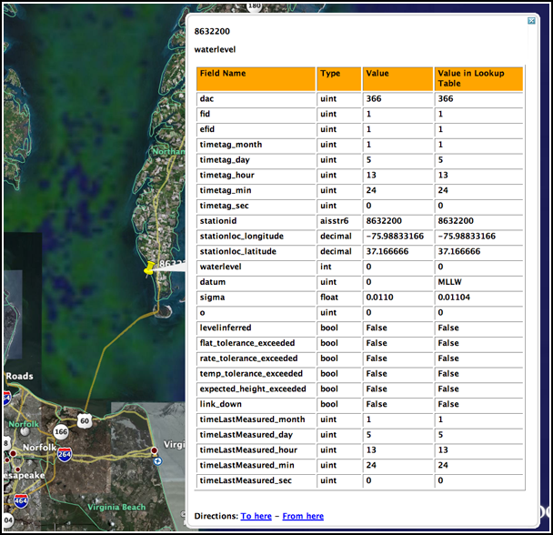
</div>
</div>

<div class="posted">
<br />Posted by <span class="item-creator">Kurt</span>
| <a class="link" href="2007-01.html#e2007-01-05T15_37_45.txt">Permalink</a>

<!-- <br /><a href="archives/2007-01-06T13_13_35.html#comments">Comments</a> -->
</div>
</div>
<div class="item">
<a id="e2007-01-05T15_09_54.txt" name="e2007-01-05T15_09_54.txt"></a>
<h2 class="date">01.05.2007 15:09</h2>
<div class="blogbody">
<h3 class="title">noaadata ais to kml</h3>
<div class="item-description">
I just got kml generation working for my noaadata project.  The code
generator looks for the first fields names containing "longitude" and
"latitude" and uses these for positioning the message pop-up.  Expect
to see this work in the noaadata-0.9 release.  It also looks for a
titlefield attribute in the message field.  It then uses this subfield
for the name field within the kml.
<br /><br />
<pre>./ais_msg_1.py --decode -T kml-full -t nmea '!AIVDM,1,1,,A,15RTgt0PAso;90TKcjM8h6g208CQ,0*4A,r003679900,1168010561' > 371798000.kml</pre>
<br /><br />
View the resulting GoogleEarth file: <a
href="../attachments/2007-01/371798000.kml">371798000.kml</a>
<br /><br />
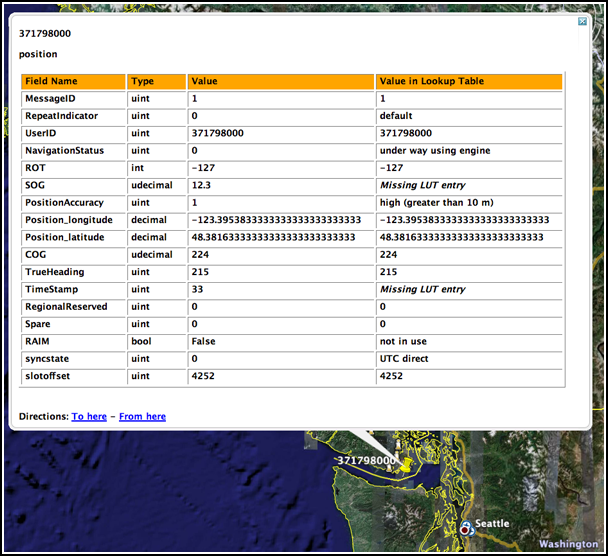
</div>
</div>

<div class="posted">
<br />Posted by <span class="item-creator">Kurt</span>
| <a class="link" href="2007-01.html#e2007-01-05T15_09_54.txt">Permalink</a>

<!-- <br /><a href="archives/2007-01-05T15_37_45.html#comments">Comments</a> -->
</div>
</div>
<div class="item">
<a id="e2007-01-05T10_30_39.txt" name="e2007-01-05T10_30_39.txt"></a>
<h2 class="date">01.05.2007 10:30</h2>
<div class="blogbody">
<h3 class="title">noaadata python package provides AIS decoding</h3>
<div class="item-description">
My new noaadata package includes ais message handling.  Here is a
quick demo of what it can do as of version 0.8.  You can download it
here: <a
href="http://vislab-ccom.unh.edu/~schwehr/ais/waterlevel/downloads/">http://vislab-ccom.unh.edu/~schwehr/ais/waterlevel/downloads/</a>
(Note: this location may change in the future).
<br /><br />
First, here is an N-AIS ship position message in its native NMEA-AIS format.
I grabbed this one at random from the stream.  I don't know what ship this is
or where it is located.
<pre>!AIVDM,1,1,,A,15RTgt0PAso;90TKcjM8h6g208CQ,0*4A,r003679900,1168010561</pre>
Now, I can ask ais_msg_1.py for help.
<pre>./ais_msg_1.py -h
Usage: ais_msg_1.py [options]
Options:
  --version             show program's version number and exit
  -h, --help            show this help message and exit
  --doc-test            run the documentation tests
  --unit-test           run the unit tests
  -v, --verbose         Make the test output verbose
  -t IOTYPE, --type=IOTYPE
                        What kind of string to expect (binary, nmeapayload,
                        nmea) [default: nmeapayload]
  -T OUTPUTTYPE, --output-type=OUTPUTTYPE
                        What kind of string to output (std, html, xml)
                        [default: std]
  -o OUTPUTFILENAME, --output=OUTPUTFILENAME
                        Name of the python file to write [default: stdout]
  -d, --decode          decode a "position" AIS message
  -e, --encode          encode a "position" AIS message
  --RepeatIndicator-field=uint
                        Field parameter value [default: 0]
  --UserID-field=uint   Field parameter value [default: none]
...</pre>
I want to decode the message to see what is in there:
<pre>
./ais_msg_1.py -d -t nmea \
'!AIVDM,1,1,,A,15RTgt0PAso;90TKcjM8h6g208CQ,0*4A,r003679900,1168010561'
<br /><br />
position:
        MessageID:           1
        RepeatIndicator:     0
        UserID:              371798000
        NavigationStatus:    0
        ROT:                 -127
        SOG:                 12.3
        PositionAccuracy:    1
        Position_longitude:  -123.395383333
        Position_latitude:   48.38163333333
        COG:                 224
        TrueHeading:         215
        TimeStamp:           33
        RegionalReserved:    0
        Spare:               0
        RAIM:                False
        syncstate:           0
        slotoffset:          4252
</pre>
Note that slotoffset is not right.  The library can't currently decode
conditionals.  Also, the rate of turn is not right either.  The
library does not support decodings other than linear.  ROT requires a sqrt.
<br /><br />
What if I want to see a pretty html for that has the entries decoded
by lookup tables if possible?  That is now trival to do!
<pre>
./ais_msg_1.py -d -t nmea -T html '!AIVDM,1,1,,A,15RTgt0PAso;90TKcjM8h6g208CQ,0*4A,r003679900,1168010561' > msg.html
open msg.html
</pre>
Here is what msg.html contains.  I did a a couple quick edits to make it
look nicer in the blog.  First, I removed all extra white space in the html.  Second, I shorted the decimal values.  Third, I changed a header 3 tag to a bold tag.
<br /><br />
<b>position</b>
<table border="1">
<tr bgcolor="orange">
<th align="left">Field Name</th>
<th align="left">Type</th>
<th align="left">Value</th>
<th align="left">Value in Lookup Table</th>
<tr>
<td>MessageID</td>
<td>uint</td>
        <td>1</td>
        <td>1</td>
</tr>
<tr>
<td>RepeatIndicator</td>
<td>uint</td>
        <td>0</td>
<td>default</td></tr>
<tr>
<td>UserID</td>
<td>uint</td>
        <td>371798000</td>
        <td>371798000</td>
</tr>
<tr>
<td>NavigationStatus</td>
<td>uint</td>
        <td>0</td>
<td>under way using engine</td></tr>
<tr>
<td>ROT</td>
<td>int</td>
        <td>-127</td>
        <td>-127</td>
</tr>
<tr>
<td>SOG</td>
<td>udecimal</td>
        <td>12.3</td>
<td><i>Missing LUT entry</i></td></tr>
<tr>
<td>PositionAccuracy</td>
<td>uint</td>
        <td>1</td>
<td>high (greater than 10 m)</td></tr>
<tr>
<td>Position_longitude</td>
<td>decimal</td>
        <td>-123.3953833</td>
        <td>-123.3953833</td>
</tr>
<tr>
<td>Position_latitude</td>
<td>decimal</td>
        <td>48.38163333</td>
        <td>48.38163333</td>
</tr>
<tr>
<td>COG</td>
<td>udecimal</td>
        <td>224</td>
        <td>224</td>
</tr>
<tr>
<td>TrueHeading</td>
<td>uint</td>
        <td>215</td>
        <td>215</td>
</tr>
<tr>
<td>TimeStamp</td>
<td>uint</td>
        <td>33</td>
<td><i>Missing LUT entry</i></td></tr>
<tr>
<td>RegionalReserved</td>
<td>uint</td>
        <td>0</td>
        <td>0</td>
</tr>
<tr>
<td>Spare</td>
<td>uint</td>
        <td>0</td>
        <td>0</td>
</tr>
<tr>
<td>RAIM</td>
<td>bool</td>
        <td>False</td>
<td>not in use</td></tr>
<tr>
<td>syncstate</td>
<td>uint</td>
        <td>0</td>
<td>UTC direct</td></tr>
<tr>
<td>slotoffset</td>
<td>uint</td>
        <td>4252</td>
        <td>4252</td>
</tr>
</table>
<br /><br />
And finally, we should have Google Earth show us where that was.
<br /><br />
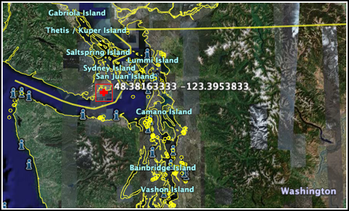
</div>
</div>

<div class="posted">
<br />Posted by <span class="item-creator">Kurt</span>
| <a class="link" href="2007-01.html#e2007-01-05T10_30_39.txt">Permalink</a>

<!-- <br /><a href="archives/2007-01-05T15_09_54.html#comments">Comments</a> -->
</div>
</div>
<div class="item">
<a id="e2007-01-05T09_59_49.txt" name="e2007-01-05T09_59_49.txt"></a>
<h2 class="date">01.05.2007 09:59</h2>
<div class="blogbody">
<h3 class="title">NOAA RSS</h3>
<div class="item-description">
Finding this made my day.  Noaa has <a
href="http://www.rss.noaa.gov/">NOAA RSS</a> which should make an easy
way to stay connected with NOAA.  There are also podcasts, which I
have yet to check out.
<br /><br />
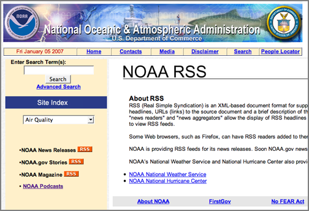
</div>
</div>

<div class="posted">
<br />Posted by <span class="item-creator">Kurt</span>
| <a class="link" href="2007-01.html#e2007-01-05T09_59_49.txt">Permalink</a>

<!-- <br /><a href="archives/2007-01-05T10_30_39.html#comments">Comments</a> -->
</div>
</div>
<div class="item">
<a id="e2007-01-04T09_13_57.txt" name="e2007-01-04T09_13_57.txt"></a>
<h2 class="date">01.04.2007 09:13</h2>
<div class="blogbody">
<h3 class="title">pydap success</h3>
<div class="item-description">
Thanks to Roberto De Almeida for replying to my posts on the pydap
google group (<a
href="http://groups.google.com/group/pydap/">http://groups.google.com/group/pydap</a>),
I now have a working test script that pulls just one row of data from
the NOAA CO-OPS server.  I have a serious speed problem (22 seconds to
fetch), but this is great and I am now not depending on the obsolete
SOAPpy package.  Note that someone has picked SOAPpy back up and
started maintaining it,but most of the developers are on to ZSI.
<br /><br />
Here is my small test script to fetch one waterlevel point.
<pre>
<font color="#444444">#!/usr/bin/env python</font>
<strong>import</strong> <font color="#2040a0">dap</font>.<font color="#2040a0">client</font>
<strong>import</strong> <font color="#2040a0">urllib</font>
<font color="#2040a0">dataset</font><font color="4444FF">=</font><font color="#2040a0">dap</font>.<font color="#2040a0">client</font>.<font color="#2040a0">open</font><font color="4444FF">(</font><font color="#008000">'http://opendap.co-ops.nos.noaa.gov/dods/IOOS/Raw_Water_Level'</font><font color="4444FF">)</font>
<font color="#2040a0">seq</font> <font color="4444FF">=</font> <font color="#2040a0">dataset</font><font color="4444FF">[</font><font color="#008000">'WATERLEVEL_RAW_PX'</font><font color="4444FF">]</font>
<font color="#2040a0">reqStr</font><font color="4444FF">=</font><font color="#2040a0">urllib</font>.<font color="#2040a0">quote</font><font color="4444FF">(</font><font color="#008000">'_STATION_ID=&quot;1615680&quot;&amp;_BEGIN_DATE=&quot;20060101 10:06&quot;&amp;_END_DATE=&quot;20060101 10:06&quot;&amp;_DATUM=&quot;MLLW&quot;'</font><font color="4444FF">)</font>
<strong>print</strong> <font color="#008000">'reqStr:'</font>,<font color="#2040a0">reqStr</font>
<font color="#2040a0">filt_seq</font><font color="4444FF">=</font><font color="#2040a0">seq</font>.<font color="#2040a0">filter</font><font color="4444FF">(</font><font color="#2040a0">reqStr</font><font color="4444FF">)</font> 
<font color="#2040a0">data</font> <font color="4444FF">=</font> <font color="#2040a0">filt_seq</font>.<font color="#2040a0">_get_data</font><font color="4444FF">(</font><font color="4444FF">)</font> <font color="#444444"># Is this bad - using private method?</font>
<strong>print</strong> <font color="#008000">'Found this many waterlevel points:'</font>,<font color="#2040a0">len</font><font color="4444FF">(</font><font color="#2040a0">data</font><font color="4444FF">)</font>
<strong>print</strong> <font color="#2040a0">data</font><font color="4444FF">[</font><font color="4444FF">-</font><font color="#FF0000">1</font><font color="4444FF">]</font>
</pre>
</div>
</div>

<div class="posted">
<br />Posted by <span class="item-creator">Kurt</span>
| <a class="link" href="2007-01.html#e2007-01-04T09_13_57.txt">Permalink</a>

<!-- <br /><a href="archives/2007-01-05T09_59_49.html#comments">Comments</a> -->
</div>
</div>
<div class="item">
<a id="e2007-01-03T18_53_45.txt" name="e2007-01-03T18_53_45.txt"></a>
<h2 class="date">01.03.2007 18:53</h2>
<div class="blogbody">
<h3 class="title">pydap retrieves NOAA waterlevel raw 6 minute data</h3>
<div class="item-description">
Many thanks to Rob Cermak on the pydap mailing list for helping me
figure this out.  Clearly, I have more to learn about how to do these
queries efficiently.  However, this is good enough for now.
<pre>
<font color="#444444">#!/usr/bin/env python</font>
<font color="#008000">''</font><font color="#008000">'
Try out pydap to fetch the current water level from the NOAA Co-ops
server.  This is a really slow way to pull one data point!
'</font><font color="#008000">''</font>
<strong>import</strong> <font color="#2040a0">dap</font>.<font color="#2040a0">client</font>
<font color="#2040a0">dataset</font><font color="4444FF">=</font><font color="#2040a0">dap</font>.<font color="#2040a0">client</font>.<font color="#2040a0">open</font><font color="4444FF">(</font><font color="#008000">'http://opendap.co-ops.nos.noaa.gov/dods/IOOS/Raw_Water_Level'</font><font color="4444FF">)</font>
<font color="#444444">#</font>
<strong>print</strong> <font color="#008000">'Dataset keys:'</font>
<strong>for</strong> <font color="#2040a0">item</font> <strong>in</strong> <font color="#2040a0">dataset</font>.<font color="#2040a0">keys</font><font color="4444FF">(</font><font color="4444FF">)</font><font color="4444FF">:</font> <strong>print</strong> <font color="#008000">'  '</font>,<font color="#2040a0">item</font>
<font color="#2040a0">seq</font> <font color="4444FF">=</font> <font color="#2040a0">dataset</font><font color="4444FF">[</font><font color="#008000">'WATERLEVEL_RAW_PX'</font><font color="4444FF">]</font>
<font color="#2040a0">filt_seq</font><font color="4444FF">=</font><font color="#2040a0">seq</font>.<font color="#2040a0">filter</font><font color="4444FF">(</font><font color="#008000">'_STATION_ID=&quot;1615680&quot;&amp;_BEGIN_DATE=&quot;20060101&quot;&amp;_END_DATE=&quot;20060101&quot;&amp;_DATUM=&quot;MLLW&quot;'</font><font color="4444FF">)</font> 
<strong>print</strong> <font color="#008000">'filter keys:'</font>
<strong>for</strong> <font color="#2040a0">item</font> <strong>in</strong> <font color="#2040a0">filt_seq</font>.<font color="#2040a0">keys</font><font color="4444FF">(</font><font color="4444FF">)</font><font color="4444FF">:</font> <strong>print</strong> <font color="#008000">'  '</font>,<font color="#2040a0">item</font>
<font color="#444444">#</font>
<font color="#444444"># Print the results.  To just get field, do this...</font>
<font color="#444444">#</font>
<strong>print</strong> <font color="#008000">'Just the WL_VALUE field:'</font>,<font color="#2040a0">filt_seq</font><font color="4444FF">[</font><font color="#008000">'WL_VALUE'</font><font color="4444FF">]</font><font color="4444FF">[</font><font color="4444FF">:</font><font color="4444FF">]</font><font color="4444FF">[</font><font color="4444FF">-</font><font color="#FF0000">1</font><font color="4444FF">]</font>
<font color="#444444">#</font>
<font color="#444444"># Fetch all the fields...</font>
print 'One data point:'
<strong>for</strong> <font color="#2040a0">item</font> <strong>in</strong> <font color="#2040a0">filt_seq</font>.<font color="#2040a0">keys</font><font color="4444FF">(</font><font color="4444FF">)</font><font color="4444FF">:</font>
    <strong>print</strong> <font color="#008000">'  '</font>,<font color="#2040a0">item</font>,<font color="#008000">':'</font>,<font color="#2040a0">filt_seq</font><font color="4444FF">[</font><font color="#2040a0">item</font><font color="4444FF">]</font><font color="4444FF">[</font><font color="4444FF">:</font><font color="4444FF">]</font><font color="4444FF">[</font><font color="4444FF">-</font><font color="#FF0000">1</font><font color="4444FF">]</font> 
</pre>When I run the above, I get this after a long wait.  I really am fetching too many points and I am refetching for each field.
<pre>./test_pydap.py 
Dataset keys:
   WATERLEVEL_RAW_PX
filter keys:
   _STATION_ID
   _DATUM
   _BEGIN_DATE
   _END_DATE
   DCP
   SENSOR_ID
   DATE_TIME
   WL_VALUE
   SIGMA
   O
   F
   R
   L
Just the WL_VALUE field: 0.474
One data point:
   _STATION_ID : 1615680
   _DATUM : MLLW
   _BEGIN_DATE : 20060101
   _END_DATE : 20060101
   DCP : 1
   SENSOR_ID : A1
   DATE_TIME : l
   WL_VALUE : 0.474
   SIGMA : 0.064
   O : 0
   F : 0
   R : 0
   L : 0
</pre>
The answer on speed is to both constrain the time window to the 6
minute interval (thereby not pulling the whole day) and getting all
the fields in one call.  I was able to do the later from ipython like this:
<pre>
filt_seq._get_data()
...
 ('1615680',
  'MLLW',
  '20060101',
  '20060101',
  '1',
  'A1',
  'Jan  1 2006 11:48PM',
  0.43099999999999999,
  0.097000000000000003,
  0,
  0,
  0,
  0),
 ('1615680',
  'MLLW',
  '20060101',
  '20060101',
  '1',
  'A1',
  'Jan  1 2006 11:54PM',
  0.47399999999999998,
  0.064000000000000001,
  0,
  0,
  0,
  0)]
</pre>
For some reason, I can't do this from a script?  This happens if I tack a _get_data() on the end of the above script.  I get this loveliness:
<pre>
Traceback (most recent call last):
  File "./test_pydap.py", line 25, in <module>
    data = filt_seq._get_data()
  File "/sw/lib/python2.5/site-packages/dap/dtypes.py", line 223, in _get_data
    return _build_data(self.level, *[var.data for var in self.values()])
  File "/sw/lib/python2.5/site-packages/dap/dtypes.py", line 517, in _build_data
    out = [_build_data(level-1, *els) for els in itertools.izip(*vars_)]
  File "/sw/lib/python2.5/site-packages/dap/proxy.py", line 37, in __iter__
    return iter(self[:])
  File "/sw/lib/python2.5/site-packages/dap/proxy.py", line 105, in __getitem__
    resp, data = openurl(url, self.cache, self.username, self.password)
  File "/sw/lib/python2.5/site-packages/dap/util/http.py", line 21, in openurl
    raise ClientError(msg)
dap.exceptions.ClientError: 'Server error 0: "java.sql.SQLException:
JZ006: Caught IOException: java.io.IOException: JZ0PA: The query has
been cancelled and the response discarded.  The cancel was probably
issued by another statement on the connection.";\n};\nError {\n code =
0;\n message = "java.sql.SQLException: JZ0S2: Statement object has
already been closed."'
</pre>
I am not sure what that java SQL error is about.  But when I use a
very limited script, it all works?
<pre>
#!/usr/bin/env python
import dap.client
dataset=dap.client.open('http://opendap.co-ops.nos.noaa.gov/dods/IOOS/Raw_Water_Level')
seq = dataset['WATERLEVEL_RAW_PX']
filt_seq=seq.filter('_STATION_ID="1615680"&_BEGIN_DATE="20060101"&_END_DATE="20060101"&_DATUM="MLLW"') 
data = filt_seq._get_data()
print 'Found this many waterlevel points:',len(data)
print data[-1]
</pre>
Results in this:
<pre>./test_pydap2.py 
Dataset keys:
   WATERLEVEL_RAW_PX
Found this many waterlevel points: 240
('1615680', 'MLLW', '20060101', '20060101', '1', 'A1', 'Jan  1 2006 11:54PM', 0.47399999999999998, 0.064000000000000001, 0, 0, 0, 0)
</pre>
Now to jump back to that performance problem.  I only want one sample,
not 240.  Pulling only one should be much faster.  If I try limiting the 
start and end dates by adding time, that should work, but it doesn't.
<pre>filt_seq=seq.filter('_STATION_ID="1615680"&_BEGIN_DATE="20060101 10:00"&_END_DATE="20060101 11:00"&_DATUM="MLLW"') 
</pre>
Gives another server side error.
<pre>
dap.exceptions.ClientError: 'Server error 3: "Encountered
\'\\\'20060101\' at line 1, column 65.\nWas expecting one of:\n \'*\'
...\n \'{\' ...\n <ID> ...\n <INT> ...\n <FLOAT> ...\n <STR> ...\n
";\n};\nError {\n code = 0;\n message = "java.sql.SQLException: JZ0S2:
Statement object has already been closed."'
</pre>
When formatted for humans...
<pre>
dap.exceptions.ClientError: 
Server error 3: 
"Encountered '\'20060101\' at line 1, column 65.
Was expecting one of:
    \'*\' ...
    \'{\' ...
    <ID> ...
    <INT> ...
    <FLOAT> ...
    <STR> ...
    ";
};
Error {
    code = 0;
    message = "java.sql.SQLException: JZ0S2: Statement object has already been closed."
</pre>
Does this mean there is an error in the server side parser?  The spec
(<a
href="http://opendap.co-ops.nos.noaa.gov/dods/IOOS/Raw_Water_Level.das">Raw_Water_Level.das</a>)
says that this should be okay, right?
<pre>
_BEGIN_DATE {
        String long_name "REQUIRED 8- to 14-character Begin Date (yyyymmdd hh:mi) surrounded in double quotes";
        String Examples " 20040321  OR 20030712 19:02 ";
    }
</pre>
I do have a 14 character string.  Hmmm.  Rob Cermak had an example URL
for pulling the data.  Time to try out the URL query method.  Try it in a <a target="new" href="http://opendap.co-ops.nos.noaa.gov/dods/IOOS/Raw_Water_Level.ascii?WATERLEVEL_RAW_PX.WL_VALUE&WATERLEVEL_RAW_PX._STATION_ID="1615680"&WATERLEVEL_RAW_PX._DATUM="MLLW"&WATERLEVEL_RAW_PX._BEGIN_DATE="20060101"&WATERLEVEL_RAW_PX._END_DATE="20060102"&WATERLEVEL_RAW_PX.WL_VALUE!=-999.9
">pop-up window.</a>
<pre>
http://opendap.co-ops.nos.noaa.gov/dods/IOOS/Raw_Water_Level.ascii?\
WATERLEVEL_RAW_PX.WL_VALUE&WATERLEVEL_RAW_PX._STATION_ID="1615680"&\
WATERLEVEL_RAW_PX._DATUM="MLLW"&WATERLEVEL_RAW_PX._BEGIN_DATE="20060101"&\
WATERLEVEL_RAW_PX._END_DATE="20060102"&WATERLEVEL_RAW_PX.WL_VALUE!=-999.9
</pre>
You can try that on the command line something like this, but remove
the \ characters and make it one monster line.
<pre>
wget -O data 'http://opendap.co-ops.nos.noaa.gov/dods/IOOS/Raw_Water_Level.ascii?\
WATERLEVEL_RAW_PX.WL_VALUE&WATERLEVEL_RAW_PX._STATION_ID="1615680"&\
WATERLEVEL_RAW_PX._DATUM="MLLW"&\
WATERLEVEL_RAW_PX._BEGIN_DATE="20060101"&\
WATERLEVEL_RAW_PX._END_DATE="20060102"&\
WATERLEVEL_RAW_PX.WL_VALUE!=-999.9'
# Then check out the results...
wc -l data 
488 data
head data
Dataset {
    Sequence {
        Float64 WL_VALUE;
    } WATERLEVEL_RAW_PX;
} WATERLEVEL_RAW_PX;
=============================================
WATERLEVEL_RAW_PX.WL_VALUE
0.436
0.466
0.428
</pre>
Note that I switched out the - for = to not freak out nano blogger.
Now I should be able to specify time and get fewer results.
<pre>
wget -O data.1hr 'http://opendap.co-ops.nos.noaa.gov/dods/IOOS/Raw_Water_Level.ascii?\
WATERLEVEL_RAW_PX.WL_VALUE&
WATERLEVEL_RAW_PX._STATION_ID="1615680"&\
WATERLEVEL_RAW_PX._DATUM="MLLW"&\
WATERLEVEL_RAW_PX._BEGIN_DATE="20060101"&\
WATERLEVEL_RAW_PX._END_DATE="20060102"&\
WATERLEVEL_RAW_PX.WL_VALUE!=-999.9'
# Then check out the results...
wc -l data.1hr
19 data.1hr
</pre>
I can also pull the times for those samples.
<pre>
wget -O data.1hr 'http://opendap.co-ops.nos.noaa.gov/dods/IOOS/Raw_Water_Level.ascii?\
WATERLEVEL_RAW_PX.DATE_TIME&
WATERLEVEL_RAW_PX._STATION_ID="1615680"&\
WATERLEVEL_RAW_PX._DATUM="MLLW"&\
WATERLEVEL_RAW_PX._BEGIN_DATE="20060101"&\
WATERLEVEL_RAW_PX._END_DATE="20060102"&\
WATERLEVEL_RAW_PX.WL_VALUE!=-999.9'
</pre>
Which give:
<pre>
Dataset {
    Sequence {
        String DATE_TIME;
    } WATERLEVEL_RAW_PX;
} WATERLEVEL_RAW_PX;
===================================
WATERLEVEL_RAW_PX.DATE_TIME
"Jan  1 2006 10:00AM"
"Jan  1 2006 10:06AM"
"Jan  1 2006 10:12AM"
"Jan  1 2006 10:18AM"
"Jan  1 2006 10:24AM"
"Jan  1 2006 10:30AM"
"Jan  1 2006 10:36AM"
"Jan  1 2006 10:42AM"
"Jan  1 2006 10:48AM"
"Jan  1 2006 10:54AM"
"Jan  1 2006 11:00AM"
</pre>
I do not understand why I can't get a smaller time window through dap,
but it does work through a URL.
<br /><br />
Have I lost you yet??? 
</div>

<div class="posted">
<br />Posted by <span class="item-creator">Kurt</span>
| <a class="link" href="2007-01.html#e2007-01-03T18_53_45.txt">Permalink</a>

<!-- <br /><a href="archives/2007-01-04T09_13_57.html#comments">Comments</a> -->
</div>
</div>
<div class="item">
<a id="e2007-01-03T12_34_45.txt" name="e2007-01-03T12_34_45.txt"></a>
<h2 class="date">01.03.2007 12:34</h2>
<div class="blogbody">
<h3 class="title">OPeNDAP confusion</h3>
<div class="item-description">
I decided to give OPeNDAP a try.  It all sounds great, but getting to
the data that I want does not seem to come easily.  I built fink
packages for the python dap library (<a
href="http://pydap.org">pydap.org</a>) and httplib2, both of which are
in <a
href="http://vislab-ccom.unh.edu/~schwehr/software/fink">vislab-ccom.unh.edu/~schwehr/software/fink</a>.
I had a little trouble with the setuptools/ez_setup based install so
there is a hack in there that copies dap/__init__.py into the
installation directory.  Once I got pydap working (aka dap-py24 and
dap-py25), the examples in the documentation work.  But trying to go
to the NOAA DODS server, I get stuck.  Here is what I have so far.
<pre>
ipython2.4
<br /><br />
import dap.client
dataset=dap.client.open('http://opendap.co-ops.nos.noaa.gov/dods/IOOS/Raw_Water_Level')
wl = dataset.WATERLEVEL_RAW_PX
<br /><br />
wl.keys()
['_STATION_ID',
 '_DATUM',
 '_BEGIN_DATE',
 '_END_DATE',
 'DCP',
 'SENSOR_ID',
 'DATE_TIME',
 'WL_VALUE',
 'SIGMA',
 'O',
 'F',
 'R',
 'L']
<br /><br />
type(wl)
&lt;class 'dap.dtypes.SequenceType'&gr;</pre>
Now what?  I am not quite sure how to setup the query.  I figured it
was time to try out a GUI dap/dods type tool, so I gave OPeNDAP Data
Connector (<a href="http://www.opendap.org/ODC/">ODC</a>).  I think this will take work to figure out how to fetch and view the waterlevel NOAA data that I am looking for.
<br /><br />
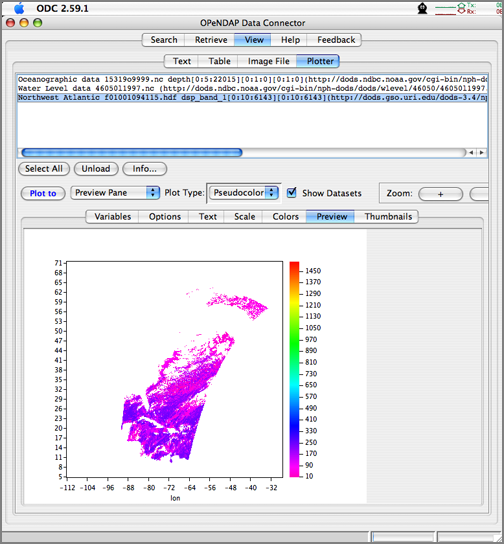
</div>
</div>

<div class="posted">
<br />Posted by <span class="item-creator">Kurt</span>
| <a class="link" href="2007-01.html#e2007-01-03T12_34_45.txt">Permalink</a>

<!-- <br /><a href="archives/2007-01-03T18_53_45.html#comments">Comments</a> -->
</div>
</div>
<div class="item">
<a id="e2007-01-03T08_46_29.txt" name="e2007-01-03T08_46_29.txt"></a>
<h2 class="date">01.03.2007 08:46</h2>
<div class="blogbody">
<h3 class="title">The "Dumbness of Crowds"</h3>
<div class="item-description">
A fun quick read:
<br /><br />
<a href="http://headrush.typepad.com/creating_passionate_users/2007/01/the_dumbness_of.html">The "Dumbness of Crowds"</a> [Creating Passionate Users blog]
<pre>Art isn't made by committee.
Great design isn't made by consensus.
True wisdom isn't captured from a crowd.</pre>
My only question is "What is the Y-axis of these 4 plots?"
<br /><br />
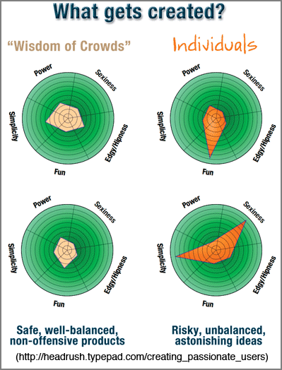
</div>
</div>

<div class="posted">
<br />Posted by <span class="item-creator">Kurt</span>
| <a class="link" href="2007-01.html#e2007-01-03T08_46_29.txt">Permalink</a>

<!-- <br /><a href="archives/2007-01-03T12_34_45.html#comments">Comments</a> -->
</div>
</div>
<div class="item">
<a id="e2007-01-02T13_50_09.txt" name="e2007-01-02T13_50_09.txt"></a>
<h2 class="date">01.02.2007 13:50</h2>
<div class="blogbody">
<h3 class="title">No Mac support for 3DConnecion SpaceNavigator??!!??</h3>
<div class="item-description">
We just got a SpaceNavigator at the lab (<a
href="http://www.ogleearth.com/2006/11/3dconnexions_sp.html">Ogle
Earth review</a>).  I have had a serial spacemouse for a while, but
the drive issue has been frustrating.  I wrote my own driver, but for
some reason it locks up the spacemouse.  I was hoping that the
SpaceNavigator would just work with GoogleEarth 4/Mac OSX 10.4.8, but
no such luck.  Add to that, the 3D Connexion web page lists Mac OSX
through 10.3. but does not mention 10.4.  However, the topper is that
their page still lists WorldToolkit, which no longer seems to exist.
<br /><br />
Note:  Here is what OgleEarth says about driver support
<pre>It comes with a driver (Windows XP, Mac promised) that integrates this
device seamlessly with both Google Earth and SketchUp.</pre>
<br /><br />
And the response from 3DConnexion:
<pre>Posted: Tue Nov 28, 2006 7:55 pm 
Hello J.P.: 
.
We are currently looking at a Mac solution for SpaceNavigator, which
will most probably be available in the first quarter of next
year. Please stay tuned for more information on this board. We will
also look for beta testers.
.
And, if you can give us feedback on the applications you are running,
that information is always welcome.
.
Ziva Nissan 
3Dconnexion, Inc. 
</pre>
</div>
</div>

<div class="posted">
<br />Posted by <span class="item-creator">Kurt</span>
| <a class="link" href="2007-01.html#e2007-01-02T13_50_09.txt">Permalink</a>

<!-- <br /><a href="archives/2007-01-03T08_46_29.html#comments">Comments</a> -->
</div>
</div>
<div class="item">
<a id="e2007-01-02T09_48_21.txt" name="e2007-01-02T09_48_21.txt"></a>
<h2 class="date">01.02.2007 09:48</h2>
<div class="blogbody">
<h3 class="title">Ogle Earth reviews Arc Explorer</h3>
<div class="item-description">
Ogle Earth has a <a
href="http://www.ogleearth.com/2006/12/arcgis_explorer_1.html">review
of ESRI's Arc Explorer</a>, which is a Google Earth like application.
<br /><br />
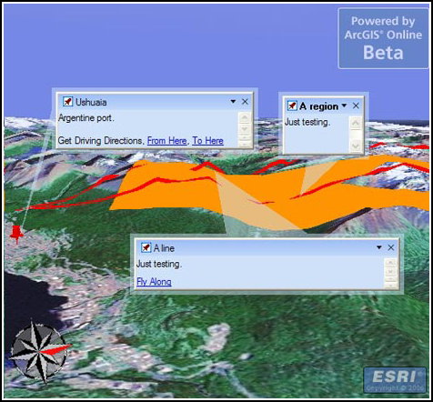
</div>
</div>

<div class="posted">
<br />Posted by <span class="item-creator">Kurt</span>
| <a class="link" href="2007-01.html#e2007-01-02T09_48_21.txt">Permalink</a>

<!-- <br /><a href="archives/2007-01-02T13_50_09.html#comments">Comments</a> -->
</div>
</div>
<div class="item">
<a id="e2007-01-02T09_42_57.txt" name="e2007-01-02T09_42_57.txt"></a>
<h2 class="date">01.02.2007 09:42</h2>
<div class="blogbody">
<h3 class="title">LabView - Google Earth integration</h3>
<div class="item-description">
I am no longer a LabView user now that I have moved to a new position,
but I see the possibility of extending Jeff Gee's LabView based
paleomagnetic acquisition software to allow input of the sample
location which could then link data directly into GoogleEarth.
<br /><br />
<a href="http://forums.ni.com/ni/board/message?board.id=170&message.id=217121"> Google Earth With LabVIEW 8.0</a> [NI forums]
</div>
</div>

<div class="posted">
<br />Posted by <span class="item-creator">Kurt</span>
| <a class="link" href="2007-01.html#e2007-01-02T09_42_57.txt">Permalink</a>

<!-- <br /><a href="archives/2007-01-02T09_48_21.html#comments">Comments</a> -->
</div>
</div>
<div class="item">
<a id="e2007-01-02T09_38_46.txt" name="e2007-01-02T09_38_46.txt"></a>
<h2 class="date">01.02.2007 09:38</h2>
<div class="blogbody">
<h3 class="title">Making games in Google Earth</h3>
<div class="item-description">
<a href="http://www.gamasutra.com/features/20061228/intel_01.shtml">
The "Mars Sucks" Game Concept and Design</a>
<br /><br />
So the game is silly, but it shows the possibilities for other
applications built within the GoogleEarth application.
</div>
</div>

<div class="posted">
<br />Posted by <span class="item-creator">Kurt</span>
| <a class="link" href="2007-01.html#e2007-01-02T09_38_46.txt">Permalink</a>

<!-- <br /><a href="archives/2007-01-02T09_42_57.html#comments">Comments</a> -->
</div>
</div>
<div class="item">
<a id="e2007-01-02T09_15_52.txt" name="e2007-01-02T09_15_52.txt"></a>
<h2 class="date">01.02.2007 09:15</h2>
<div class="blogbody">
<h3 class="title">Intro to Google Earth by Google (video)</h3>
<div class="item-description">
<pre>
Google Earth Team's Jessica Pfund gave a one-hour Google Tech Talk
that serves as a great introduction to Google Earth
</pre>
<a href="http://video.google.com/videoplay?docid=1825732698496120777&q=type%3Agoogle+-engEDU+-%22authors%40google%22">GoogleVideo</a>
</div>
</div>

<div class="posted">
<br />Posted by <span class="item-creator">Kurt</span>
| <a class="link" href="2007-01.html#e2007-01-02T09_15_52.txt">Permalink</a>

<!-- <br /><a href="archives/2007-01-02T09_38_46.html#comments">Comments</a> -->
</div>
</div>
<div class="item">
<a id="e2007-01-01T17_26_38.txt" name="e2007-01-01T17_26_38.txt"></a>
<h2 class="date">01.01.2007 17:26</h2>
<div class="blogbody">
<h3 class="title">Ben Smith's blog</h3>
<div class="item-description">
Ben Smith has just joined the blog-o-sphere... <a
href="http://www.maperl.com/cgi-local/journal">s/v Mother of Perl and
the Hydrographic Dinghy - Current Events</a>.  If you know Ben, you
will not be surprised that his blog is powered by perl.  I look
forward to hearing about his travels in the Caribbean as I look out my
window to the slushy snow out my window here in NH.
</div>
</div>

<div class="posted">
<br />Posted by <span class="item-creator">Kurt</span>
| <a class="link" href="2007-01.html#e2007-01-01T17_26_38.txt">Permalink</a>

<!-- <br /><a href="archives/2007-01-02T09_15_52.html#comments">Comments</a> -->
</div>
</div>
<div class="item">
<a id="e2007-01-01T11_52_34.txt" name="e2007-01-01T11_52_34.txt"></a>
<h2 class="date">01.01.2007 11:52</h2>
<div class="blogbody">
<h3 class="title">Which superhero</h3>
<div class="item-description">
My results:<BR><br><B>You are <FONT SIZE=6>Spider-Man</FONT></B>
<TABLE><TR><TD><TABLE><TR><TD>Spider-Man</TD>
<TD><HR ALIGN=LEFT NOSHADE SIZE=4 WIDTH=75></TD><TD> 75%</TD>
</TR><TR><TD>Green Lantern</TD>
<TD><HR ALIGN=LEFT NOSHADE SIZE=4 WIDTH=65></TD><TD> 65%</TD>
</TR><TR><TD>Superman</TD>
<TD><HR ALIGN=LEFT NOSHADE SIZE=4 WIDTH=65></TD><TD> 65%</TD>
</TR><TR><TD>Iron Man</TD>
<TD><HR ALIGN=LEFT NOSHADE SIZE=4 WIDTH=65></TD><TD> 65%</TD>
</TR><TR><TD>Robin</TD>
<TD><HR ALIGN=LEFT NOSHADE SIZE=4 WIDTH=50></TD><TD> 50%</TD>
</TR><TR><TD>Catwoman</TD>
<TD><HR ALIGN=LEFT NOSHADE SIZE=4 WIDTH=50></TD><TD> 50%</TD>
</TR><TR><TD>Supergirl</TD>
<TD><HR ALIGN=LEFT NOSHADE SIZE=4 WIDTH=50></TD><TD> 50%</TD>
</TR><TR><TD>Hulk</TD>
<TD><HR ALIGN=LEFT NOSHADE SIZE=4 WIDTH=50></TD><TD> 50%</TD>
</TR><TR><TD>The Flash</TD>
<TD><HR ALIGN=LEFT NOSHADE SIZE=4 WIDTH=40></TD><TD> 40%</TD>
</TR><TR><TD>Wonder Woman</TD>
<TD><HR ALIGN=LEFT NOSHADE SIZE=4 WIDTH=30></TD><TD> 30%</TD>
</TR><TR><TD>Batman</TD>
<TD><HR ALIGN=LEFT NOSHADE SIZE=4 WIDTH=30></TD><TD> 30%</TD>
</TR></TABLE></TD>
<TD>You are intelligent, witty, <BR>a bit geeky and have great<BR> power and responsibility.<BR>
</TD>
</TR></TABLE><A HREF="http://www.thesuperheroquiz.com/">
Click here to take the Superhero Personality Quiz</A><BR>
</div>
</div>

<div class="posted">
<br />Posted by <span class="item-creator">Kurt</span>
| <a class="link" href="2007-01.html#e2007-01-01T11_52_34.txt">Permalink</a>

<!-- <br /><a href="archives/2007-01-01T17_26_38.html#comments">Comments</a> -->
</div>
</div>
</div>

</div>

<div id="links">

<div class="calendar">
<table border="0" cellspacing="4" cellpadding="0" summary="Calendar with links to days with entries">
<caption class="calendarhead">January 2007</caption>
<tr>
<th align="center"><span class="calendarday">Su</span></th>
<th align="center"><span class="calendarday">Mo</span></th>
<th align="center"><span class="calendarday">Tu</span></th>
<th align="center"><span class="calendarday">We</span></th>
<th align="center"><span class="calendarday">Th</span></th>
<th align="center"><span class="calendarday">Fr</span></th>
<th align="center"><span class="calendarday">Sa</span></th>
</tr>
<tr>
<td align="center"></td>            
<td align="center"><span class="calendar"><a href="2007-01.html#e2007-01-01T17_26_38.txt">1</a></span></td>
<td align="center"><span class="calendar"><a href="2007-01.html#e2007-01-02T13_50_09.txt">2</a></span></td>
<td align="center"><span class="calendar"><a href="2007-01.html#e2007-01-03T18_53_45.txt">3</a></span></td>
<td align="center"><span class="calendar"><a href="2007-01.html#e2007-01-04T09_13_57.txt">4</a></span></td>
<td align="center"><span class="calendar"><a href="2007-01.html#e2007-01-05T15_37_45.txt">5</a></span></td>
<td align="center"><span class="calendar"><a href="2007-01.html#e2007-01-06T13_27_26.txt">6</a></span></td>
</tr>
<tr>
         
<td align="center"><span class="calendar"><a href="2007-01.html#e2007-01-07T14_58_00.txt">7</a></span></td>
<td align="center"><span class="calendar"><a href="2007-01.html#e2007-01-08T15_51_54.txt">8</a></span></td>
<td align="center"><span class="calendar"><a href="2007-01.html#e2007-01-09T22_36_07.txt">9</a></span></td>
<td align="center"><span class="calendar"><a href="2007-01.html#e2007-01-10T11_51_07.txt">10</a></span></td>
<td align="center"><span class="calendar"><a href="2007-01.html#e2007-01-11T08_17_44.txt">11</a></span></td>
<td align="center"><span class="calendar"><a href="2007-01.html#e2007-01-12T15_02_14.txt">12</a></span></td>
<td align="center"><span class="calendar"><a href="2007-01.html#e2007-01-13T18_57_46.txt">13</a></span></td>
</tr>
<tr>
      
<td align="center"><span class="calendar">14</span></td>
<td align="center"><span class="calendar">15</span></td>
<td align="center"><span class="calendar"><a href="2007-01.html#e2007-01-16T10_59_09.txt">16</a></span></td>
<td align="center"><span class="calendar"><a href="2007-01.html#e2007-01-17T20_19_00.txt">17</a></span></td>
<td align="center"><span class="calendar"><a href="2007-01.html#e2007-01-18T07_46_40.txt">18</a></span></td>
<td align="center"><span class="calendar"><a href="2007-01.html#e2007-01-19T15_10_15.txt">19</a></span></td>
<td align="center"><span class="calendar">20</span></td>
</tr>
<tr>
      
<td align="center"><span class="calendar"><a href="2007-01.html#e2007-01-21T20_27_19.txt">21</a></span></td>
<td align="center"><span class="calendar"><a href="2007-01.html#e2007-01-22T17_14_49.txt">22</a></span></td>
<td align="center"><span class="calendar">23</span></td>
<td align="center"><span class="calendar"><a href="2007-01.html#e2007-01-24T07_57_25.txt">24</a></span></td>
<td align="center"><span class="calendar"><a href="2007-01.html#e2007-01-25T20_31_04.txt">25</a></span></td>
<td align="center"><span class="calendar"><a href="2007-01.html#e2007-01-26T10_41_23.txt">26</a></span></td>
<td align="center"><span class="calendar"><a href="2007-01.html#e2007-01-27T15_03_40.txt">27</a></span></td>
</tr>
<tr>
   
<td align="center"><span class="calendar"><a href="2007-01.html#e2007-01-28T15_34_47.txt">28</a></span></td>
<td align="center"><span class="calendar"><a href="2007-01.html#e2007-01-29T16_27_38.txt">29</a></span></td>
<td align="center"><span class="calendar"><a href="2007-01.html#e2007-01-30T18_11_28.txt">30</a></span></td>
<td align="center"><span class="calendar"><a href="2007-01.html#e2007-01-31T08_33_01.txt">31</a></span></td>
</tr>
</table>
</div>

</div>

<br clear="all" />

</body>
</html>
